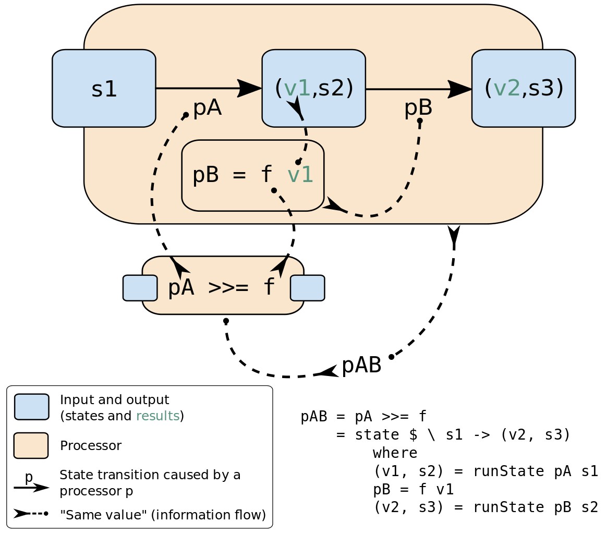

Fundamental Haskell notes
Table of Contents
- 1. Introduction
- 2. Definitions
- 2.1. Abstraction
- 2.2. Algebra
- 2.3. Alpha equivalence
- 2.4. Ambigram
- 2.5. Ancient Greek and Latin prefixes
- 2.6. Application memory
- 2.7. Argument
- 2.8. Binary
- 2.9. Bind
- 2.10. Cartesian product
- 2.11. Category theory
- 2.11.1. *
- 2.11.2. Abelian category
- 2.11.3. Composition
- 2.11.4. Endofunctor category
- 2.11.5. Functor
- 2.11.5.1. *
- 2.11.5.2. Power set functor
- 2.11.5.3. Forgetful functor
- 2.11.5.4. Identity functor
- 2.11.5.5. Endofunctor
- 2.11.5.6. Applicative functor
- 2.11.5.6.1. *
- 2.11.5.6.2. Applicative laws
- 2.11.5.6.3. Applicative function
- 2.11.5.6.4. Special applicatives
- 2.11.5.6.5. Monad
- 2.11.5.6.5.1. *
- 2.11.5.6.5.2. Monad laws
- 2.11.5.6.5.3. Monad type class
- 2.11.5.6.5.4. Functor -> Applicative -> Monad progression
- 2.11.5.6.5.5. Monad function
- 2.11.5.6.5.6. Comonad
- 2.11.5.6.5.7. Kleisli arrow
- 2.11.5.6.5.8. Kleisli composition
- 2.11.5.6.5.9. Kleisli category
- 2.11.5.6.5.10. Special monad
- 2.11.5.6.6. Alternative type class
- 2.11.5.7. Monoidal functor
- 2.11.5.8. Fusion
- 2.11.6. Hask category
- 2.11.7. Magma
- 2.11.8. Morphism
- 2.11.9. Object
- 2.11.10. Set category
- 2.11.11. Natural transformation
- 2.11.12. Hom set
- 2.11.13. Category dual
- 2.11.14. Thin category
- 2.11.15. Commuting diagram
- 2.11.16. Universal construction
- 2.11.17. Product
- 2.11.18. Coproduct
- 2.12. Coalgebra
- 2.13. Contravariant
- 2.14. Covariant
- 2.15. Data type
- 2.15.1. *
- 2.15.2. Actual type
- 2.15.3. Algebraic data type
- 2.15.4. Cardinality
- 2.15.5. Data constant
- 2.15.6. Data constructor
- 2.15.7. data declaration
- 2.15.8. Dependent type
- 2.15.9. Gen type
- 2.15.10. Higher-kinded data type
- 2.15.11. newtype declaration
- 2.15.12. Principal type
- 2.15.13. Product data type
- 2.15.14. Proxy type
- 2.15.15. Static typing
- 2.15.16. Structural type
- 2.15.17. Structural type system
- 2.15.18. Sum data type
- 2.15.19. Tuple
- 2.15.20. Type alias
- 2.15.21. Type class
- 2.15.22. Type constant
- 2.15.23. Type constructor
- 2.15.24. type declaration
- 2.15.25. Typed hole
- 2.15.26. Type inference
- 2.15.27. Type class instance
- 2.15.28. Type rank
- 2.15.29. Type variable
- 2.15.30. Unlifted type
- 2.15.31. Data structure
- 2.15.32. Linear type
- 2.15.33. NonEmpty list data type
- 2.15.34. Session type
- 2.15.35. Binary tree
- 2.15.36. Bottom value
- 2.15.37. Bound
- 2.15.38. Constructor
- 2.15.39. *
- 2.15.40. Context
- 2.15.41. Inhabit
- 2.16. Declaration
- 2.17. Differential operator
- 2.18. Dispatch
- 2.19. Effect
- 2.20. Evaluation
- 2.21. Expected type
- 2.22. Expression
- 2.23. First-class
- 2.24. Function
- 2.24.1. *
- 2.24.2. Arity
- 2.24.3. Bijection
- 2.24.4. Combinator
- 2.24.5. Function application
- 2.24.6. Function body
- 2.24.7. Function composition
- 2.24.8. Function head
- 2.24.9. Function range
- 2.24.10. Higher-order function
- 2.24.11. Injection
- 2.24.12. Partial function
- 2.24.13. Purity
- 2.24.14. Pure function
- 2.24.15. Sectioning
- 2.24.16. Surjection
- 2.24.17. Unsafe function
- 2.24.18. Variadic
- 2.24.19. Domain
- 2.24.20. Codomain
- 2.24.21. Open formula
- 2.24.22. Recursion
- 2.24.23. Free variable
- 2.24.24. Closure
- 2.24.25. Parameter
- 2.24.26. Partial application
- 2.25. Fundamental theorem of algebra
- 2.26. Homotopy
- 2.27. Idiom
- 2.28. Impredicative
- 2.29. Infix
- 2.30. IO
- 2.31. Kind
- 2.32. Lambda calculus
- 2.33. Lense
- 2.34. Nothing
- 2.35. Operation
- 2.36. Pattern guard
- 2.37. Permutation
- 2.38. Phrase
- 2.39. Point-free
- 2.40. Polymorphism
- 2.41. Pragma
- 2.41.1. LANGUAGE pragma
- 2.41.1.1. LANGUAGE option
- 2.41.1.1.1. *
- 2.41.1.1.2. Useful by default
- 2.41.1.1.3. AllowAmbiguousTypes
- 2.41.1.1.4. ApplicativeDo
- 2.41.1.1.5. ConstrainedClassMethods
- 2.41.1.1.6. CPP
- 2.41.1.1.7. DeriveFunctor
- 2.41.1.1.8. ExplicitForAll
- 2.41.1.1.9. FlexibleContexts
- 2.41.1.1.10. FlexibleInstances
- 2.41.1.1.11. GeneralizedNewtypeDeriving
- 2.41.1.1.12. ImplicitParams
- 2.41.1.1.13. LambdaCase
- 2.41.1.1.14. MultiParamTypeClasses
- 2.41.1.1.15. MultiWayIf
- 2.41.1.1.16. OverloadedStrings
- 2.41.1.1.17. PartialTypeSignatures
- 2.41.1.1.18. RankNTypes
- 2.41.1.1.19. ScopedTypeVariables
- 2.41.1.1.20. TupleSections
- 2.41.1.1.21. TypeApplications
- 2.41.1.1.22. TypeSynonymInstances
- 2.41.1.1.23. UndecidableInstances
- 2.41.1.1.24. ViewPatterns
- 2.41.1.1.25. DatatypeContexts
- 2.41.1.2. How to make a GHC LANGUAGE extension
- 2.41.1.1. LANGUAGE option
- 2.41.1. LANGUAGE pragma
- 2.42. Predicative
- 2.43. Compositionality
- 2.44. Ψ-combinator
- 2.45. Quantifier
- 2.46. Referential transparency
- 2.47. Relation
- 2.48. REPL
- 2.49. Semantics
- 2.50. Set
- 2.51. Shrinking
- 2.52. Spine
- 2.53. Superclass
- 2.54. Tensor
- 2.55. Testing
- 2.56. Uncurry
- 2.57. Unit
- 2.58. Variable
- 2.59. Zero
- 2.60. Modular arithmetic
- 2.61. Property
- 2.62. Backpack
- 2.63. Nullary
- 2.64. Arbitrary
- 2.65. Logic
- 2.66. Haskell structures
- 2.67. Computer science
- 2.68. Ground expression
- 2.69. Content word
- 3. Give definitions
- 3.1. Const functor
- 3.2. Free object
- 3.3. Identity type
- 3.4. Constant type
- 3.5. Gen
- 3.6. ST-Trick monad
- 3.7. Lax monoidal functor
- 3.8. Tensorial strength
- 3.9. Strong monad
- 3.10. Either
- 3.11. Weak head normal form
- 3.12. Function image
- 3.13. Maybe
- 3.14. Inverse
- 3.15. Inversion
- 3.16. Inverse function
- 3.17. Inverse morphism
- 3.18. Invertible
- 3.19. Invertibility
- 3.20. Partial inverse
- 3.21. Define LANGUAGE pragma options
- 3.22. GHC debug keys
- 3.23. GHC optimize keys
- 3.24. GHC check keys
- 3.25. Generalised algebraic data types
- 3.26. Order theory
- 3.27. Universal algebra
- 3.28. Relation
- 3.29. Cryptomorphism
- 3.30. Lexically scoped type variables
- 3.31. Abstract data type
- 3.32. ADT
- 3.33. Concrete type
- 3.34. Functional dependencies
- 3.35. MonoLocalBinds
- 3.36. KindSignatures
- 3.37. ExplicitNamespaces
- 3.38. Combinator pattern
- 3.39. Symbolic expression
- 3.40. Polynomial
- 3.41. Data family
- 3.42. Type synonym family
- 3.43. Indexed type family
- 3.44. TypeFamilies
- 3.45. Error
- 3.46. Exception
- 3.47. ConstraintKinds
- 3.48. Specialisation
- 3.49. Sequence
- 4. Citations
- 5. Good code
- 5.1. Good: Type aliasing
- 5.2. Good: Type wideness
- 5.3. Good: Read Conventions of variables (page 176)
- 5.4. Good: Print
- 5.5. Good: Read code evaluation (488 on-ward)
- 5.6. Good: Fold
- 5.7. Good: Computation model
- 5.8. Good: Make bottoms only local
- 5.9. Good: Newtype wrap is ideally transparent for compiler and does not change performance
- 5.10. Good: Instances of types/type classes must go with code you write
- 5.11. Good: Functions can be abstracted as arguments
- 5.12. Good: Infix operators can be bind to arguments
- 5.13. Good: Arbitrary
- 5.14. Good: Principle of Separation of concerns
- 5.15. Good: Function composition
- 5.16. Good: Point-free
- 5.17. Good: Functor application
- 5.18. Good: Parameter order
- 5.19. Good: Applicative monoid
- 5.20. Good: Creative process
- 5.21. <<<Good: About operators (<$) (>) (<) (>>)>>>
- 5.22. Good: About functions like {mapM, sequence}_
- 5.23. Good: Guideliles
- 5.24. Good: Use Typed holes to progress the code
- 5.25. Good: Haskell allows infinite terms but not infinite types
- 5.26. Good: Use type sysnonims to differ the information
- 5.27. <<<Good: Control.Monad.Error -> Control.Monad.Except>>>
- 5.28. Good: Monad OR Applicative
- 5.29. Good: Haskell Package Versioning Policy
- 5.30. Good: Linear type
- 5.31. Good: Exception vs Error
- 5.32. Good: Let vs. Where
- 5.33. Good: RankNTypes
- 5.34. Good: Orphan type instance
- 5.35. Good: Smart constructor
- 6. Bad code
- 7. Useful functions to remember
- 8. Investigate
- 9. Tools
- 9.1. ghc-pkg
- 9.2. Search over the Haskell packages code: Codesearch from Aelve
- 9.3. Integration of NixOS/Nix with Haskell IDE Engine (HIE) and Emacs (Spacemacs)
- 9.3.1. 1. Install the Cachix: https://github.com/cachix/cachix
- 9.3.2. 2. Installation of HIE: https://github.com/infinisil/all-hies/#cached-builds
- 9.3.3. 3. Emacs (Spacemacs) configuration:
- 9.3.4. 4. Open the Haskell file from a project
- 9.3.5. 5. Be pleased writing code
- 9.3.6. 6. (optional) Debugging
- 9.4. Debugger
- 10. Libs
- 10.1. Exceptions
- 10.1.1. Exceptions - optionally pure extensible exceptions that are compatible with the mtl
- 10.1.2. Safe-exceptions - safe, simple API equivalent to the underlying implementation in terms of power, encourages best practices minimizing the chances of getting the exception handling wrong.
- 10.1.3. Enclosed-exceptions - capture exceptions from the enclosed computation, while reacting to asynchronous exceptions aimed at the calling thread.
- 10.2. Memory management
- 10.3. Parsers - megaparsec
- 10.4. CLIs - optparse-applicative
- 10.5. HTML - Lucid
- 10.6. Web applications - Servant
- 10.7. IO libraries
- 10.8. JSON - aeson
- 10.1. Exceptions
- 11. Drafts
- 12. Reference
- 13. Liturgy
1 Introduction
Important notes on Haskell, category & related fields.
GitHub&GitLab parse Org into HTML only partially. Good quality HTML export is in the `README.html`, it is hosted at https://blog.latukha.com/haskell-notes.html.
This is complex Org notes file with LaTeX formulas.
To get:
- LaTeX formulas
- Interlinks
- Navigation
use capable editor.
If something - <<<This is a radio target>>> - for org-mode linking.
Elisp snippet for you to prettify <<<Radio targets>>> to _Radio targets_:
;;;; 2019-06-12: NOTE: Prettify '<<<Radio targets>>>' to be shown as 'Radio targets' when org-descriptive-links set ;;;; This is improvement of the code from: Tobias&glmorous: https://emacs.stackexchange.com/questions/19230/how-to-hide-targets ;;;; There exists library created from the sample: https://github.com/talwrii/org-hide-targets (defcustom org-hidden-links-additional-re "\\(<<<\\)[[:print:]]+?\\(>>>\\)" "Regular expression that matches strings where the invisible-property of the sub-matches 1 and 2 is set to org-link." :type '(choice (const :tag "Off" nil) regexp) :group 'org-link) (make-variable-buffer-local 'org-hidden-links-additional-re) (defun org-activate-hidden-links-additional (limit) "Put invisible-property org-link on strings matching `org-hide-links-additional-re'." (if org-hidden-links-additional-re (re-search-forward org-hidden-links-additional-re limit t) (goto-char limit) nil)) (defun org-hidden-links-hook-function () "Add rule for `org-activate-hidden-links-additional' to `org-font-lock-extra-keywords'. You can include this function in `org-font-lock-set-keywords-hook'." (add-to-list 'org-font-lock-extra-keywords '(org-activate-hidden-links-additional (1 '(face org-target invisible org-link)) (2 '(face org-target invisible org-link))))) (add-hook 'org-font-lock-set-keywords-hook #'org-hidden-links-hook-function)
SCHT: and metadata in :PROPERTIES: - of my org-drill practices, please just run org-drill-strip-all-data.
2 Definitions
2.1 Abstraction
abs away from, off (in absentia)
tractus draw, haul, drag
Purified generalization of process.
Forgeting the details. Simplified approach. Out of sight - out of mind.
* creates a new semantic level in which one can be absolutely precise.
It is a great did to name an abstraction (Denotational semantics).
2.1.1 *
2.1.2 Leaky abstraction
Abstraction that leaks details that it is supposed to abstract away.
2.1.2.1 *
2.2 Algebra
al-jabr - assemble parts.
A system of algebra based on given axioms.
—
2.2.1 *
2.2.2 Algebraic
Composite from simple parts.
Also: Algebraic data type.
2.2.3 Algebraic structure
Algebraic structure on a set (called carrier set or underlying set) is a collection of finitary operations on that set.
The set with this structure is also called an algebra.
Algebraic structures include groups, rings, fields, and lattices. More complex structures can be defined by introducing multiple operations, different underlying sets, or by altering the defining axioms. Examples of more complex algebraic structures include vector spaces, modules, and algebras.
"Group-like structures":
| Closure | Associativity | Identity | Invertability | Commutativity | |
|---|---|---|---|---|---|
| Semigroupoid | ✓ | ||||
| Small Category | ✓ | ✓ | |||
| Groupoid | ✓ | ✓ | ✓ | ||
| Magma | ✓ | ||||
| Quasigroup | ✓ | ✓ | |||
| Loop | ✓ | ✓ | ✓ | ||
| Semigroup | ✓ | ✓ | |||
| Inverse Semigroup | ✓ | ✓ | ✓ | ||
| Monoid | ✓ | ✓ | ✓ | ||
| Group | ✓ | ✓ | ✓ | ✓ | |
| Abelian group | ✓ | ✓ | ✓ | ✓ | ✓ |
| Ring | ✓ | ✓ | ✓ | ✓ | under + |
2.2.3.1 *
2.3 Alpha equivalence
Equivalence of a processes in expressions. If expressions have according parameters different, but the internal processes are literally the same process.
2.4 Ambigram
ambi both
γράμμα grámma written character
Object that from different points of view has the same meaning.
While this word has two contradictory diametrically opposite usages, one was chosen (more frequent).
But it has… Both.
TODO: For merit of differentiating the meaning about different meaning referring to Tensor as object with many meanings.
2.5 Ancient Greek and Latin prefixes
| Meaning | Greek prefix | Latin prefix |
|---|---|---|
| above, excess | hyper- | super-, ultra- |
| across, beyond, through | dia- | trans- |
| after | post- | |
| again, back | re- | |
| against | anti- | contra-, (in-, ob-) |
| all | pan | omni- |
| around | peri- | circum- |
| away or from | apo-, ap- | ab- (or de-) |
| bad, difficult, wrong | dys- | mal- |
| before | pro- | ante-, pre- |
| between, among | inter- | |
| both | amphi- | ambi- |
| completely or very | de-, ob- | |
| down | de-, ob- | |
| four | tetra- | quad- |
| good | eu- | ben-, bene- |
| half, partially | hemi- | semi- |
| in, into | en- | il-, im-, in-, ir- |
| in front of | pro- | pro- |
| inside | endo- | intra- |
| large | macro- | (macro-, from Greek) |
| many | poly- | multi- |
| not* | a-, an- | de-, dis-, in-, ob- |
| on | epi- | |
| one | mono- | uni- |
| out of | ek- | ex-, e- |
| outside | ecto-, exo- | extra-, extro- |
| over | epi- | ob- (sometimes) |
| self | auto-, aut-,auth- | ego- |
| small | micro- | |
| three | tri- | tri- |
| through | dia- | trans- |
| to or toward | epi- | ad-, a-, ac-, as- |
| two | di- | bi- |
| under, insufficient | hypo- | sub- |
| with | sym-, syn- | co-. com-, con- |
| within, inside | endo- | intra- |
| without | a-, an- | dis- (sometimes) |
2.5.1 *
2.6 Application memory
| Storage of | Block name |
|---|---|
| All not currently processing data | Heap |
| Function call, local variables | Stack |
| Static and global variables | Static/Global |
| Instructions | Binary code |
When even Main invoked - it work in Stack, and called Stack frame. Stack frame size for function calculated when it is compiled.
When stacked Stack frames exceed the Stack size - stack overflow happens.
2.7 Argument
arguere to make clear, to shine
* - evidence, proof, statement that results in system consequences.
2.7.1 Argument of a function
A value binded to the function parameter. Value/topic that the fuction would process/deal with.
Also see Argument.
2.7.1.1 *
2.8 Binary
Two of something.
2.10 Cartesian product
\[ \mathcal{A} \times \mathcal{B} \equiv \sum^{\forall}{(a,b)} \ | \ \forall a \in \mathcal{A}, \forall b \in \mathcal{B} \].
Operation, returns a set of all ordered pairs \[ (a, b) \]
Any function, functor is a subset of Cartesian product.
\[ \sum{(elem \in (\mathcal{A} \times \mathcal{B}))} = cardinality^{A \times B} \]
- not associative
- not commutative
2.10.1 *
2.11 Category theory
Category \[ \mathcal{C} \] consists of the basis:
Primitives:
- Objects - \[ a^{\mathcal{C}} \]. A node. Object of some type. Often sets, than it is Set category.
- Morphisms - \[ {(a,b)}^{\mathcal{C}} \] (AKA mappings).
- Morphism composition - binary operation: \[ {(a, b)}^{\mathcal{C}} \circ {(b, c)}^{\mathcal{C}} \equiv {(a, c)}^{\mathcal{C}} \ | \ \forall a, b, c \in \mathcal{C} \]. AKA principle of compositionality for morphisms.
Properties (or axioms):
- Associativity of morphisms: \[ {h} \circ ({g} \circ {f}) \equiv ({h} \circ {g}) \circ {f} \ \ | \ \ {f}_{a \to b}, {g}_{b \to c}, {h}_{c \to d} \].
- Every object has (two-sided) identity morphism ( & in fact - exactly one): \[ {1}_x \circ {f}_{a \to x} \equiv {f}_{a \to x}, \ \ {g}_{x \to b} \circ {1_x} \equiv {g}_{x \to b } \ \ | \ \ \forall x \ \exists {1}_{x}, \forall {f}_{a \to x}, \forall {g}_{x \to b} \].
- Principle of compositionality.
From these axioms, can be proven that there is exactly one identity morphism for every object.
Object and morphism are complete abstractions for anything.
In majority of cases under object is a state and morphism is a change.
2.11.1 *
2.11.2 Abelian category
Generalised category in which can have homological algebra, its constructions and techniques.
Is which:
- has a zero object,
- has all binary biproducts,
- has all kernel's and cokernels,
- (it has all pullbacks and pushouts)
- all monomorphism's and epimorphism's are normal.
Abelian category is very stable; for example they are regular and they satisfy the snake lemma.
The class of Abelian categories is closed under several categorical constructions.
There is notion of Abelian monoid (AKS Commutative monoid) and Abelian group (Commutative group).
Basic examples of *:
* are widely used in algebra, algebraic geometry, and topology.
* has many constructions like in categories of modules:
- kernels
- exact sequences
- commutative diagrams
* has disadvantage over category of modules. Objects do not necessarily have elements that can be manipulated directly, so traditional definitions do not work. Methods must be supplied that allow definition and manipulation of objects without the use of elements.
2.11.2.1 *
2.11.4 Endofunctor category
From the name, in this Category:
- objects of \[ End \] are Endofunctors \[ E^{\mathcal{C \to C}} \]
- morphisms are natural transformations between endofunctors
2.11.5 Functor
Functor is a map between categories. Translating objects and morphisms (as input can take morphism or object). They can preserve structure, or not.
For Functor type class or fmap - see Power set functor.
Functor properties (axioms):
- \[ F^{\mathcal{C \to D}}(a) \quad | \quad \forall a^{\mathcal{D}} \] - every source object is mapped to object in target category
- \[ \overrightarrow{(F^{\mathcal{C \to D}}(a),F^{\mathcal{C \to D}}(b))}^{\mathcal{D}} \ \ | \ \ \forall \overrightarrow{(a, b)}^{\mathcal{C}} \] - every source morphism is mapped to target category morphism between corresponding objects
- \[ F^{\mathcal{C \to D}}(\overrightarrow{g}^{\mathcal{C}} \circ \overrightarrow{f}^{\mathcal{C}}) = F^{\mathcal{C \to D}}(\overrightarrow{g}^{\mathcal{C}}) \circ F^{\mathcal{C \to D}}(\overrightarrow{f}^{\mathcal{C}}) \quad | \quad \forall y=\overrightarrow{f}^{\mathcal{C}}(x), \forall \overrightarrow{g}^{\mathcal{C}}(y) \] - composition of morphisms translates directly
These axioms guarantee that composition of functors can be fused into one functor with composition of morphisms. This process called fusion.
In Haskell this axioms have form:
fmap id = id fmap (f . g) = fmap f . fmap g
2.11.5.1 *
2.11.5.2 Power set functor
\[ \mathcal{P^{S \to P(S)}} \]
* - functor from set \[ S \] to its power set \[ \mathcal{P}(S) \].
Functor type class in Haskell defines a * and allows to do function application inside type structure layers (denoted \[ f \] or \[ m \]). IO is also such structure.
Power set is unique to the set, * is unique to the category (data type).
* embodies in itself any endofunctor. It is easily seen from Haskell definition - that the * is the polymorphic generalization over any endofunctor in a category. Application of a function to * gives a particular endofunctor (see Hask category).
class Functor f where fmap :: (a -> b) -> f a -> f b
Functor instance must be of kind ( * -> * ), so instance for higher-kinded data type must be applied until this kind.
Composed * can lift functions through any layers of structures that belong to Functor type class.
* can be used to filter-out error cases (Nothing & Left cases) in Maybe, Either and related types.
2.11.5.2.1 *
2.11.5.2.2 Power set functor laws
fmap id == id
2.11.5.2.3 Lift
fmap :: (a -> b) -> (f a -> f b)
Functor takes function a -> b and returns a function f a -> f b this is called lifting a function.
Lift does a function application through the data structure.
2.11.5.2.4 Power set functor is a free monad
Since:
- \[ \forall e \in S : \exists \{e\} \, \in \, {\mathcal{P}(S)} \ \vDash \ \forall e \in S : \exists (e \to \{e\}) \equiv unit \]
- \[ \forall \mathcal{P}(S) : \mathcal{P}(S) \in \mathcal{P}(S) \ \vDash \ \forall \mathcal{P}(S) : \exists (\mathcal{P}(\mathcal{P}(S)) \to \mathcal{P}(S)) \equiv join \]
2.11.5.3 Forgetful functor
Functor that forgets part or all of what defines structure in domain category.
\[ F^{\mathbf {Grp} \to \mathbf {Set}} \] that translates groups into their underlying sets.
Constant functor is another example.
2.11.5.3.1 *
2.11.5.4 Identity functor
2.11.5.5 Endofunctor
Is a functor which source (domain) and target (codomain) are the same category.
\[ F^{\mathcal{C \to C}}, E^{\mathcal{C \to C}} \]
2.11.5.5.1 *
2.11.5.6 Applicative functor
* - Computer science term. Category theory name - lax monoidal functor. And in category \[ Set \], and so in category \[ Hask \] all applicatives and monads are strong (have tensorial strength).
* - sequences functorial computations (plain functors can't).
(<*>) :: f (a -> b) -> f a -> f b
Requires Functor to exist.
Requires Monoidal structure.
Has monoidal structure rules, separated form function application inside structure.
Data type can have several applicative implementations.
Standard definition:
class Functor f => Applicative f where (<*>) :: f (a -> b) -> f a -> f b pure :: a -> f a
Control.Monad has an old function ap that is old implementation of <*>:
ap :: Monad m => m (a -> b) -> m a -> m b
2.11.5.6.1 *
2.11.5.6.2 Applicative laws
pure id <*> v = v
Function composition works regularly.
pure (.) <*> u <*> v <*> w = u <*> (v <*> w)
Internal function application doesn't change the structure around values.
pure f <*> pure x = pure (f x)
On condition that internal order of evaluation is preserved - order of operands is not relevant.
u <*> pure y = pure ($ y) <*> u
2.11.5.6.3 Applicative function
Essentially a fmap.
:type liftA liftA :: Applicative f => (a -> b) -> f a -> f b
Lifts function into applicative function.
Lifts binary function across two Applicative functors.
liftA2 :: Applicative f => (a -> b -> c) -> f a -> f b -> f c
liftA2 f x y == pure f <*> x <*> y
liftA2 (<*>) is pretty useful. It can lift binary operation through the two layers:
It is two-layer Applicative.
liftA2 :: Applicative f => ( a -> b -> c ) -> f a -> f b -> f c <*> :: Applicative f => (f (a -> b) -> f a -> f b) liftA2 (<*>) :: (Applicative f1, Applicative f2) => f1 (f2 (a -> b)) -> f1 (f2 a) -> f1 (f2 b)
when :: Applicative f => Bool -> f () -> f ()
Only when True - perform an applicative computation.
unless :: Applicative f => Bool -> f () -> f ()
Only when False - perform an applicative computation.
2.11.5.6.4 Special applicatives
-- Applicative f => -- f ~ Identity type Id = Identity instance Applicative Id where pure :: a -> Id a (<*>) :: Id (a -> b) -> Id a -> Id b mkId = Identity xs = [1, 2, 3] const <$> mkId xs <*> mkId xs' -- [1,2,3]
It holds only to one value. The function does not exist and `b` is phantom.
-- Applicative f => -- f ~ Constant e type C = Constant instance Applicative C where pure :: a -> C e a (<*>) :: C e (a -> b) -> C e a -> C e b pure 1 -- 1 pure 1 :: Constant String Int -- Constant {getConstant = ""}
The Validation data type isomorphic to Either, but has accumulative Applicative on the error side.
For this Applicative there is no corresponding Bind or Monad instance. Validation is an example of, "An applicative functor that is not a monad."
Because monad needs to process the result of computation - it needs to be able to process Left error statements, which is hard. Either monad on Left case just drops computation and returns this first Left.
2.11.5.6.5 Monad
μόνος monos sole
μονάδα monáda unit
* - monoid in endofunctor category with \[ \eta \] (unit) and \[ \mu \] (join) natural transformations.
Monad on \[ \mathcal{C} \] is \[ \{E^{\mathcal{C \to C}}, \, \eta, \, \mu\} \]:
- \[ E^{\mathcal{C \to C}} \] - is an endofunctor
- two natural transformations, \[ 1^c \to E \] and \[ E \circ E \to E \]:
- \[ \eta^{1^{\mathcal{C}} \to E} = {unit}^{Identity \to E}(x) = f^{ x \to E(x)}(x) \]
- \[ \mu^{(E \circ E) \to E} = {join}^{(E \circ E) \to (Identity \circ E)}(x) = | y = E(x) | = f^{E (y) \to y}(y) \]
- \[ \eta^{1^{\mathcal{C}} \to E} = {unit}^{Identity \to E}(x) = f^{ x \to E(x)}(x) \]
where:
- \[ \mathcal{C} \] is a category
- \[ 1^{\mathcal{C}} \] denotes the \[ \mathcal{C} \] identity functor
- \[ (E \circ E) \] - endofunctor \[ \mathcal{C \to C} \]
Definition with \[ \{E^{\mathcal{C \to C}}, \, \eta, \, \mu\} \] (in Hask: (\[ \{e \, :: \, f \, a \, \to \, f \, b, \ pure, \ join\} \])) - is classic categorical, in Haskell minimal complete definition is \[ \{fmap, \, pure, \, (>>=)\} \].
If there is a structure \[ S \], and a way of taking object \[ x \] into \[ S \] and a way of collapsing \[ S \circ S \] - there probably a monad.
Mostly monads used for sequencing actions (computations) (that looks like imperative programming), with ability to dependend on previous chains. Note if monad is commutative - it does not order actions.
Monad can shorten/terminate sequence of computations. It is implemented inside Monad instance. For example Maybe monad on Nothing drops chain of computation and returns Nothing.
Monadic internals are Haskell data types, and as such - they can be consumed any number of times.
Same Monad and Applicative instances must be the same:
import Control.Monad (ap) return == pure ap == (<*>) -- + Monad requirement
| Mathematics | Haskell | Math meaning |
|---|---|---|
| \[ E \] | = <$> ∷ Functor f ⇒ (a → b) → f a → f b = | endofunctor (in Haskell power set functor used) |
| \[ \eta_{ID \to E} \] | = pure ∷ Applicative f ⇒ a → f a = | unit (natural transformation for functors \[ ID \to \mathcal{P} \]) |
| \[ \mu_{E \circ E \to E} \] | = join ∷ Monad f ⇒ f (f a) → f a = | join (natural transformation for functors \[ \mathcal{P \circ P \to P} \]) |
Monad corresponds to functor laws and applicative laws and additionally:
f >>= pure == f
Explanation:
>>= :: Monad f => f a -> (a -> f b) -> f b f >>= pure == f
AKA it is a tacit description of a monad bind as endofunctor.
(m >>= f) >>= g == m >>= (\ x -> f x >>= g)
class Applicative m => Monad m where (>>=) :: m a -> (a -> m b) -> m b (>>) :: m a -> m b -> m b return :: a -> m a
Is a monoid over monad, with additional rules.
The precise set of rules (properties) not agreed upon. Class instances obey monoid & left zero rules, some additionally obey left catch and others left distribution.
Overall there * currently reforms (MonadPlus reform proposal) in several smaller nad strictly defined type classes.
Subclass of an Alternative.
<$> :: Functor f => (a -> b) -> f a -> f b <*> :: Applicative f => f (a -> b) -> f a -> f b =<< :: Monad f => (a -> f b) -> f a -> f b
pure & join are Natural transformations for the fmap.
return == pure
Nonstrict.
join :: Monad m => m (m a) -> m a
Flattens two layers of structure into one.
Join is a generalization of `concat`.
The way to express ordering in lambda calculus is to nest.
>>= :: Monad f => f a -> (a -> f b) -> f b join . fmap :: Monad f => (a -> f b) -> f a -> f b
Nonstrict.
The most ubiqutous way to >>= something is to use Lambda function:
getLine >>= \name -> putStrLn "age pls:"
Also very neet way is to bundle and handle Monad - is to bundle it with bind, and leave applied partially.
And use that partial bundle as a function - every evaluation of the function would trigger evaluation of internal Monad structure. Thumbs up.
printOneOf ∷ Bool → IO () printOneOf False = putStr "1" printOneOf True = putStr "2" quant ∷ (Bool → IO b) → IO b quant = (>>=) (randomRIO (False, True)) recursePrintOneOf ∷ Monad m ⇒ (t → m a) → t → m b recursePrintOneOf f x = (f x) >> (recursePrintOneOf f x) main ∷ IO () main = recursePrintOneOf (quant) $ printOneOf
Discard any resulting value of the action and sequence next action.
(>>) :: m a -> m b -> m b (*>) :: f a -> f b -> f b
Applicative has a similar operator.
sequence :: (Traversable t, Monad m) => t (m a) -> m (t a)
Sequence gets the traversable of monadic computations and swaps it into monad computation of taverse. In the result the collection of monadic computations turns into one long monadic computation on traverse of data.
If some step of this long computation fails - monad fails.
mapM :: (Traversable t, Monad m) => (a -> m b) -> t a -> m (t b)
mapM gets the AMB function, then takes traversable data. Then applies AMB function to traversable data, and returns converted monadic traversable data.
foldM :: (Foldable t, Monad m) => (b -> a -> m b) -> b -> t a -> m b foldl :: Foldable t => (b -> a -> b) -> b -> t a -> b
* is a monadic foldl.
b is initial comulative value, m b is a comulative bank.
Right folding achieved by reversing the input list.
filterM :: Applicative m => (a -> m Bool) -> [a] -> m [a] filter :: (a -> Bool) -> [a] -> [a]
Take Boolean monadic computation, filter the list by it.
zipWithM :: Applicative m => (a -> b -> m c) -> [a] -> [b] -> m [c] zipWith :: (a -> b -> c) -> [a] -> [b] -> [c]
Take monadic combine function and combine two lists with it.
msum :: (Foldable t, MonadPlus m) => t (m a) -> m a sum :: (Foldable t, Num a) => t a -> a
Category \[ \mathcal{C} \] comonad is a monad of opposite category \[ \mathcal{C}^{op} \].
Composition of Kleisli arrows.
(<=<) :: Monad m => (b -> m c) -> (a -> m b) -> a -> m c infixr 1 ;; compare (.) :: (b -> c ) -> (a -> b ) -> a -> c
Often used left-to-right version:
(>=>) :: Monad m => (a -> m b) -> (b -> m c) -> a -> m c ;; compare (>>=) :: Monad m => m a -> (a -> m b) -> m b
Which allows to replace monadic bind chain with Kleisli composition.
f1 arg >>= f2 >>= f3 == f1 >=> f2 >=> f3 $ arg == f3 <=< f2 <=< f1 $ arg
Category \[ \mathcal{C} \], \[ 〈E, \overrightarrow{\eta}, \overrightarrow{\mu}〉 \] monad over \[ \mathcal{C} \].
Kleisli category \[ \mathcal{C}_{T} \] of \[ \mathcal{C} \]:
\[ \mathrm{Obj}(\mathcal{C}_{T}) \ = \ \mathrm{Obj}(\mathcal{C}) \]
\[ \mathrm{Hom}_{\mathcal{C}_{T}}(x,y) \ = \ \mathrm{Hom}_{\mathcal{C}}(x,E(y)) \]
Wraps data in the Identity constructor.
Useful: Creates monads from monad transformers.
Bind: Applies internal value to the bound function.
Code:
newtype Identity a = Identity { runIdentity :: a } -- coerse is a function that directly moves data between type aliases instance Functor Identity where fmap = coerce instance Applicative Identity where pure = Identity (<*>) = coerce instance Monad Identity where m >>= k = k (runIdentity m)
Example:
-- derive the State monad using the StateT monad transformer type State s a = StateT s Identity a
Something that may not be or not return a result. Any lookups into the real world, database querries.
Bind: Nothing input gives Nothing output, Just x input uses x as input to the bound function.
When some computation results in Nothing - drops the chain of computations and returns Nothing.
Zero: Nothing
Plus: result in first occurence of Just else Nothing.
Code:
data Maybe a = Nothing | Just a instance Monad Maybe where return = Just fail = Nothing Nothing >>= _ = Nothing (Just x) >>= f = f x instance MonadPlus Maybe where mzero = Nothing Nothing `mplus` x = x x `mplus` _ = x
Example:
Given 3 dictionaries:
- Full names to email addresses,
- Nicknames to email addresses,
- Email addresses to email preferences.
Create a function that finds a person's email preferences based on either a full name or a nickname.
data MailPref = HTML | Plain data MailSystem = ... getMailPrefs :: MailSystem -> String -> Maybe MailPref getMailPrefs sys name = do let nameDB = fullNameDB sys nickDB = nickNameDB sys prefDB = prefsDB sys addr <- (lookup name nameDB) `mplus` (lookup name nickDB) lookup addr prefDB
When computation results in Left - drops other computations & returns the recieved Left.
Someting that can fail, throw exceptions.
The failure process records the description of a failure. Bind function uses successful values as input to the bound function, and passes failure information on without executing the bound function.
Useful:
Composing functions that can fail. Handle exceptions, crate error handling structure.
Zero: empty error.
Plus: if first argument failed then execute second argument.
Computations which may return 0 or more possible results.
Bind: The bound function is applied to all possible values in the input list and the resulting lists are concatenated into list of all possible results.
Useful: Building computations from sequences of non-deterministic operations.
Zero: []
Plus: (++)
Creates a read-only shared environment for computations.
The pure function ignores the environment, while >>= passes the inherited environment to both subcomputations.
type Reader r = ReaderT r Identity -- equivalent to ((->) e), (e ->)
For (e ->):
- Functor is
(.)
fmap :: (b -> c) -> (a -> b) -> a -> c fmap = (.)
- Applicative:
pureisconst
pure :: a -> b -> a pure x _ = x
(<*>)is:
(<*>) :: (a -> b -> c) -> (a -> b) -> a -> c (<*>) f g = \a -> f a (g a)
(>>=) :: (a -> b) -> (b -> a -> c) -> a -> c (>>=) m k = Reader $ \r -> runReader (k (runReader m r)) r join :: (e -> e -> a) -> e -> a join f x = f x x
runReader :: Reader r a -- the Reader to run -> r -- an initial environment -> a -- extracted final value
Usage:
data Env = ... createEnv :: IO Env createEnv = ... f :: Reader Env a f = do a <- g pure a g :: Reader Env a g = do env <- ask -- "Open the environment namespace into env" a <- h env -- give env to h pure a h :: Env -> a ... -- use env and produce the result main :: IO () main = do env <- createEnv a = runReader g env ...
In Haskell under normal circumstances impure functions should not directy call impure functions.
h is an impure function, and createEnv is impure function, so they should have intermediary.
Computations which accumulate monoid data to a shared Haskell storage.
So * is parametrized by monoidal type.
Accumulator is maintained separately from the returned values.
Shared value modified through Writer monad methods.
* frees creator and code from manually keeping the track of accumulation.
Bind: The bound function is applied to the input value, bound function allowed to <> to the accumulator.
type Writer r = WriterT r Identity
Example:
f :: Monoid b => a -> (a, b) f a = if _condition_ then runWriter $ g a else runWriter do a1 <- h a pure a1 g :: Monoid b => Writer b a g a = do tell _value1_ -- accumulator <> _value1_ pure a -- observe that accumulator stored inside monad and only a main value needs to be returned h :: Monoid b => Writer b a h a = do tell _value2_ -- accumulator <> _value_ pure a
runWriter :: Writer w a -> (a, w) -- Unwrap a writer computation as a (result, accumulator) pair. -- The inverse of writer.
WriterT, Writer unnecessarily keeps the entire logs in the memory. Use fast-logger for logging.
Computations that pass-over a state.
The bound function is applied to the input value to produce a state transition function which is applied to the input state.
Pure functional language cannot update values in place because it violates referential transparency.
type State s = StateT s Identity
Binding copies and transforms the state parameter through the sequence of the bound functions so that the same state storage is never used twice. Overall this gives the illusion of in-place update to the programmer and in the code, while in fact the autogenerated transition functions handle the state changes.
Example type: State st a
State describes functions that consume a state and produce a tuple of result and an updated state.
Monad manages the state with the next process:

Where:
- f - processsor making function
- pA, pAB, pB - state processors
- sN - states
- vN - values
Bind with a processor making function from state procesor (pA) creates a new state processor (pAB).
The wrapping and unwrapping by State/runState is implicit.
2.11.5.6.6 Alternative type class
Monoid over applicative. Has left catch property.
Allows to run simolteniously several instances of a computation (or computations) and from them yeld one result by law from (<|>) :: Type -> Type -> Type.
Minimal complete definition:
empty :: f a -- The identity element of <|> (<|>) :: f a -> f a -> f a -- Associative binary operation
2.11.5.7 Monoidal functor
Functors between monoidal categories that preserves monoidal structure.
2.11.6 Hask category
Category of Haskell where objects are types and morphisms are functions.
It is a hypothetical category at the moment, since undefined and bottom values break the theory, is not Cartesian closed, it does not have sums, products, or initial object, () is not a terminal object, monad identities fail for almost all instances of the Monad class.
That is why Haskell developers think in subset of Haskell where types do not have bottom values. This only includes functions that terminate, and typically only finite values. The corresponding category has the expected initial and terminal objects, sums and products, and instances of Functor and Monad really are endofunctors and monads.
Hask contains subcategories, like Lst containing only list types.
Haskell and Category concepts:
2.11.6.1 *
2.11.7 Magma
Set with a binary operation which form a closure.
2.11.7.1 Mag category
The category of magmas, denoted \[ Mag \], has as objects - sets with a binary operation, and morphisms given by homomorphisms of operations (in the universal algebra sense).
2.11.7.1.1 *
2.11.7.2 Semigroup
2.11.7.2.1 *
2.11.7.2.2 Monoid
Semigroup with identity element. Category with a one object.
Ideally fits as an accumulation class.
class Monoid m where mempty :: m mappend :: m -> m -> m mappend = (<>) mconcat :: [m] -> m mconcat = foldr mappend mempty
* can be simplified to category with a single object, remember that monoid operation is a composition of morphisms operation in category.
For example to represent the whole non-negative integers with the one object and morphism "\[ 1 \]" is absolutely enough, composition operation is "\[ + \]".
import Data.Monoid do show (mempty :: Num a => Sum a) -- "Sum {getSum = 0}" show $ Sum 1 -- "Sum {getSum = 1}" show $ (Sum 1) <> (Sum 1) <> (Sum 1) -- "Sum {getSum = 3}" -- ...
Also backwards - any single-object category is a monoid. Category has an identity requirement and associativity of composition requirement, which makes it a free monoid.
mempty <> x = x
x <> mempty = x
x <> mempty = x (y <> z) = (x <> y) <> z mconcat = foldr (mempty <>)
Everything associative can be mappend.
Commutativity property:
\[ x \circ y = y \circ x \]
Opens a big abilities in concurrent and distributed processing.
Group operation obeys the axiom of commutativity.
Commutative group under + & monoid under ×, + × connected by distributive property.
- and × are generalized binary operations of addition and multiplication. × has no requirement for commutativity.
Example: set of same size square matricies of numbers with matrix operations form a ring.
2.11.8 Morphism
μορφή morphe form
Arrow between two objects in a category.
General description: Arrow from source to target. Denotes something.
On a level of objects: is probably structure-preserving map from one mathematical structure to another of the same type.
Morphism is a generalization (\[ f(x*y) \equiv f(x) \diamond f(y) \]) of homomorphism (\[ f(x*y) \equiv f(x) * f(y) \]).
Under morphism almost always is the meaning of homomorphism-like properties.
Morphism can be anything.
If morphism corresponds to function requirements - then it is a function.
2.11.8.2 Homomorphism
ὁμός homos same (was chosen becouse of initial Anglish mistranslation to "similar")
μορφή morphe form
similar form
* map between two algebraic structures of the same type, operation-preserving.
\[ f_{x \to y} = f(a \star b) = f(a) \diamond f(b) \],
where \[ x,\ y \] are sets with additonal algebraic structure that includes \[ \star, \diamond \] accordingly; \[ a,\ b \] are elements of set \[ x \].
* sends identity morphisms to identity morphisms and inverses to inverses.
The concept of * has been generalized under the name of morphism to many structures that either do not have an underlying set, or are not algebraic.
2.11.8.2.1 *
2.11.8.3 Identity morphism
Identity morphism - or simply identity: \[ x \in C : \; id_{x}=1_{x} : x \to x \]
Composed with other morphism gives same morphism.
Corresponds to Reflexivity and Automorphism.
2.11.8.3.1 Identity
\[ P(e,a)=P(a,e)=a \ | \ \exists e \in S, \forall a \in S \]
\[ P() \] is commutative.
\[ \exists e \in S, \forall a \in S : \; P(e,a)=a \]
\[ P(a,e)=a \; | \; \exists e \in S, \forall a \in S \]
2.11.8.3.2 Identity function
Return itself.
(\ x.x)
id :: a -> a
2.11.8.4 Monomorphism
μονο mono only
μορφή morphe form
Maps one to one (uniquely), so invertable (always has inverse morphism), so preserves the information/structure.
Domain can be equal or less to the codomain.
\[ f^{X \to Y}, \ \forall x \in X \, \exists! y=f(x) \vDash f(x) \equiv f_{mono}(x) \] - from homomorphism context
\[ f_{mono} \circ g1 = f_{mono} \circ g2 \ \vDash \ g1 \equiv g2 \] - from general morphism context
Thus * is left canselable.
If * is a function - it is injective. Initial set of f is fully uniquely mapped onto the image of f.
2.11.8.4.1 *
2.11.8.5 Epimorphism
επι epi on, over
μορφή morphe form
* is right canselable morphism.
\[ f^{X \to Y}, \forall y \in Y \, \exists f(x) \vDash f(x) \equiv f_{epi}(x) \] - from homomorphism context
\[ g_1 \circ f_{epi} = g_2 \circ f_{epi} \Rightarrow \; g_1 \equiv g_2 \] - from general morphism context
In Set category if * is a function - it is surjective (image of it fully uses codomain)
Codomain is a called a projection of the domain.
* fully maps into the target.
2.11.8.5.1 *
2.11.8.6 Isomorphism
ἴσος isos equal
μορφή morphe form
Not equal, but equal for current intents and purposes.
Morphism that has inverse.
Almost equal, but not quite: (Integer, Bool) & (Bool, Integer) - but can be transformed losslessly into one another.
Bijective homomorphism is also isomorphism.
\[ f^{-1, b \to a} \circ f^{a \to b} \equiv 1^a, \; f^{a \to b} \circ f^{-1, b \to a} \equiv 1^b \]
2 reasons for non-isomorphism:
- function at least ones collapses a values of domain into one value in codomain
- image (of a function in codomain) does not fill-in codomain. Then isomorphism can exists for image but not whole codomain.
Categories are isomorphic if there $$ R ∘ L = ID
2.11.8.6.1 *
2.11.8.7 Endomorphism
ενδο endo internal
μορφή morphe form
Morphism whose source object (domain) equals the target object (codomain).
Endomorphism is a monoid, because of composition reqirement in category.
2.11.8.7.1 Automorphism
αυτο auto self
μορφή form form
Isomorphism from a object to itself (epimorphism).
Corresponds to identity, reflexivity.
2.11.8.7.2 *
2.11.8.8 Catamorphism
κατά kata downward
μορφή morphe form
Denotes the unique homomorphism from an initial algebra into some other algebra.
In functional programming, catamorphism is a algebraic data type fold (generalizations of list fold), which can be names initial algebra.
* reduces the structure.
2.11.8.8.1 *
2.11.8.8.2 Anamorphism
catamorphism \[ \circ \] anamorphism
Expanding and collapsing the structure.
2.11.8.9 Kernel
Kernel of a homomorphism is a number that measures the degree homomorphism fails to meet injectivity (AKA be monomorphic).
It is a number of domain elements that fail injectivity:
thou Kernel \[ [ x | x \leftarrow 0 || x \ge 2 ] \].
Denotation:
\[ \operatorname{ker}T = \{ \mathbf{v} \in V:T(\mathbf{v}) = \mathbf{0}_{W} \} \].
2.11.8.9.1 Kernel homomorphism
Morphism of elements from the kernel.
Complementary morphism of elements that make main morphism not monomorphic.
2.11.8.10 Anamorphism
Morphism from a coalgebra to the final coalgebra for that endofunctor.
Is a function that generates a sequence by repeated application of the function to its previous result.
2.11.9 Object
Absolute abstraction. Point that has properties. Often abstracts mathematical structure.
2.11.9.1 *
2.11.9.2 Terminal object
2.11.9.3 Initial object
One that emits unique arrow into every object.
\[ \exists ! : \varnothing \to x \ | \ \exists \varnothing \in \mathcal{C}, \ \forall x \mathcal{C} \]
If initial object is Void (most frequently) - emitted arrows called absurd, because they can not be called.
Dual of terminal object.
Denotation:
Category theory:
\[ \varnothing \]
Haskell:
Void
2.11.10 Set category
2.11.11 Natural transformation
* (\[ \overrightarrow{\eta}^{\mathcal{D}} \]) is transforming : \[ \overrightarrow{\eta}^{\mathcal{D}} \circ F^{\mathcal{C \to D}} = G^{\mathcal{C \to D}} \]. Right there was seen that * allows higher-language of Category theory, talking about the composition and transformation of complex theory entities.
Roughly * is:
trans :: F a -> G a
It is a process of transforming \[ F^{\mathcal{C \to D}} \] into \[ G^{\mathcal{C \to D}} \] using existing morphisms in target category \[ \mathcal{D} \].
Since it uses morphisms - it is structure-preserving transformation of one functor into another. And since it uses only existing morphisms - it exists only when transformation is possible with existing morphisms.
Existence of * between two functors means they are somehow related.
Can be observed to be a "morphism of functors", especially in functor category.
* by \[ \overrightarrow{\eta}^{\mathcal{D}}_{y^{\mathcal{C}}}(\overrightarrow{(x,y)}^{\mathcal{C}}) \circ F^{\mathcal{C \to D}}(\overrightarrow{(x,y)}^{\mathcal{C}}) = G^{\mathcal{C \to D}}(\overrightarrow{(x,y)}^{\mathcal{C}}) \circ \overrightarrow{\eta}^{\mathcal{D}}_{x^{\mathcal{C}}}(\overrightarrow{(x,y)}^{\mathcal{C}}) \], often written short \[ \overrightarrow{\eta}_{b} \circ F(\overrightarrow{f}) = G(\overrightarrow{f}) \circ \overrightarrow{\eta}_{a} \].
Notice that the \[ \overrightarrow{\eta}^{\mathcal{D}}_{x^{\mathcal{C}}}(\overrightarrow{(x,y)}^{\mathcal{C}}) \] depends on objects&morphisms of \[ \mathcal{C} \].
In words, * depends on \[ F \] and \[ G \] functors, ability of \[ D \] morphisms to do a homotopy of \[ F \] to \[ G \], and *:
- for every object in \[ \mathcal{C} \] picks natural transformation component in \[ \mathcal{D} \].
- for every morphism in \[ \mathcal{C} \] picks the commuting diagram in \[ \mathcal{D} \], called naturality square.
Also see: Natural transformation in Haskell
2.11.11.1 *
2.11.11.2 Natural transformation component
\[ \overrightarrow{\eta}^{\mathcal{D}}(x) = F^{\mathcal{D}}(x) \to G^{\mathcal{D}}(x) \ | \ x \in \mathcal{C} \]
2.11.11.2.1 *
2.11.11.3 Natural transformation in Haskell
* is a family of morphisms parametrized by type (parametric polymorphism functions) between endofunctors (Functor, Applicative, Monad).
* in Hask is \[ F \ a \to G \ a \] - repackages data into another container, never modifies the object content, it only if - can delete it. If other - that can not be called a *.
2.11.12 Hom set
Collection of all morphisms \[ hom^{\mathcal{C}}(a,b) \ | \ \forall ( a \to b ) \in \mathcal{C} \].
2.11.13 Category dual
Category duality behaves like a logical inverse.
Inverse \[ \mathcal{C} \] = \[ \mathcal{C}^{op} \] - inverts the direction of morphisms.
Composition accordingly changes to the morphisms: \[ (g \circ f)^{op} = f^{op} \circ g^{op} \]
Any statement in the terms of \[ \mathcal{C} \] in \[ \mathcal{C}^{op} \] has the dual - the logical inverse that is true in \[ \mathcal {C}^{op} \] terms.
Opposite preserves properties:
- products: \[ (\mathcal{C} \times \mathcal{D})^{op} \cong \mathcal{C}^{op} \times \mathcal{D}^{op} \]
- functors: \[ (F^{\mathcal{C} \to \mathcal{D}})^{op} \cong F^{\mathcal{C}^{op} \to \mathcal{D}^{op}} \]
- slices: \[ (\mathcal{F} \downarrow \mathcal{G})^{op} \cong (\mathcal{G}^{op} \downarrow \mathcal{F}^{op}) \]
2.11.14 Thin category
∀ Hom sets contain zero or one morphism.
\[ f \equiv g \ | \ \forall x,y \ \forall f,g: x \to y \]
A proset (preordered set).
2.11.15 Commuting diagram
Establishes equality in morphisms that have same source and target.
Draws the morphisms that are:
\[ f = g \Rightarrow \{f, y\}: X \to Y \]
2.11.15.1 *
2.11.16 Universal construction
Algorythm of constructing definitions in Category theory.
Specially good to translate properties/definitions from other theories (Set theory) to Categories.
Method:
- Define a pattern that you defining.
- Establish ranking for pattern matches.
- The top of ranking, the best match or set of matches - is the thing you was looking for. Matches are isomorphic for defined rules.
* uses Yoneda lemma, and as such constructions are defined until isomorphism, and so isomorphic betweem each-other.
2.11.16.1 *
2.11.17 Product
Pattern: \[ p: c \to a, \ q: c \to b \]
Ranking: \[ \max{\sum^{\forall}{(!: c\prime \to c \ | \ p\prime = p \circ !, \ q\prime = q \circ !)}} \]
\[ c\prime \] is another candidate.
For sets - Cartesian product.
* is a pair. Corresponds to product data type in Hask (inhabited with all elements of the Cartesian product).
2.11.18 Coproduct
Universal constructuon:
Pattern: \[ i: a \to c, \ j: b \to c \]
Ranking: \[ \max{\sum^{\forall}{(!: c \to c\prime \ | \ i\prime = ! \circ i, \ j\prime = ! \circ j)}} \]
\[ c\prime \] is another candidate.
For sets - Disjoint union.
* is a set assembled from other two sets, in Haskell it is a tagged set (analogous to disjoint union).
2.12 Coalgebra
2.13 Contravariant
The property of basis, in which if new basis is a linear combination of the prior basis, and the change of basis inverse-proportional for the description of a Tensors in this basisis.
Denotation:
Components for contravariant basis denoted in the upper indices:
\[ V^{i} = x \]
The inverse of a covariant transformation is a contravariant transformation. Whenever a vector should be invariant under a change of basis, that is to say it should represent the same geometrical or physical object having the same magnitude and direction as before, its components must transform according to the contravariant rule.
2.13.1 *
Contravariant cofunctor
Contravariant functor - More inline term is Contravariant cofunctor
2.14 Covariant
The property of basis, in which if new basis is a linear combination of the prior basis, and the change of basis proportional for a descriptions of Tensors in this basisis.
Denotation:
Components for covariant basis denoted in the upper indices:
\[ V_{i} = x \]
2.14.1 *
2.15 Data type
Set of values.
For type to have sence the values must share some sence, properties.
2.15.1 *
2.15.2 Actual type
2.15.4 Cardinality
Number of possible implementations for a given type signature.
Disjunction, sum - adds cardinalities.
Conjunction, product - multiplies cardinalities.
2.15.5 Data constant
* - constant value; nullary data constructor.
2.15.6 Data constructor
2.15.7 data declaration
Data type declaration is the most general and versatile form to create a new data type.
Form:
data [context =>] type typeVars1..n = con1 c1t1..i | ... | conm cmt1..q [deriving]
2.15.8 Dependent type
When type and values have relation between them. Type has restrictions for values, value of a type variable has a result on the type.
2.15.8.1 *
2.15.9 Gen type
2.15.10 Higher-kinded data type
2.15.10.1 *
2.15.11 newtype declaration
Create a new type from old type by attaching a new constructor, allowing type class instance declaration.
newtype FirstName = FirstName String
Data will have exactly the same representation at runtime, as the type that is wrapped.
newtype Book = Book (Int, Int)
(,)
/ \
Integer Integer
2.15.12 Principal type
The most generic data type that still typechecks.
2.15.13 Product data type
Is an algebraic data type respesentation of a product construction.
Formed by logical conjunction (AND, '* *').
Haskell forms:
-- 1. As a tuple (the uncurried & most true-form) (T1, T2) -- 2. Curried form, data constructor that takes two types C T1 T2 -- 3. Using record syntax. =r# <inhabitant>= would return the respective =T#=. C { r1 :: T1 , r2 :: T2 }
2.15.13.1 *
2.15.14 Proxy type
Proxy type holds no data, but has a phantom parameter of arbitrary type (or even kind). Able to provide type information, even though has no value of that type (or it can be may too costly to create one).
data Proxy a = ProxyValue let proxy1 = (ProxyValue :: Proxy Int) -- a has kind `Type` let proxy2 = (ProxyValue :: Proxy List) -- a has kind `Type -> Type`
2.15.15 Static typing
Typechecking takes place at compile level.
2.15.17 Structural type system
Strict global hierarchy and relationships of types and their properties.
Haskell type system is *.
In most languages typing is name-based, not structural.
2.15.17.1 *
2.15.18 Sum data type
Algebraic data type formed by logical disjunction (OR '|').
2.15.19 Tuple
2.15.20 Type alias
Create new type constructor, and use all data structure of the base type.
2.15.21 Type class
Type system construct that adds a support of ad hoc polymorphism.
Type class makes a nice way for defining behaviour, properties over many types/objects at once.
2.15.21.1 *
2.15.21.2 Arbitrary type class
Type class of QuickCheck.Arbitrary (that is reexported by QuickCheck) for creating a generator/distribution of values.
Useful function is arbitrary - that autogenerates values.
2.15.21.2.1 Arbitrary function
2.15.21.3 CoArbitrary type class
Pseudogenerates a function basing on resulting type.
coarbitrary :: CoArbitrary a => a -> Gen b -> Gen b
2.15.21.3.1 *
2.15.21.4 Typeable type class
Allows dynamic type checking in Haskell for a type.
Shift a typechecking of type from compile time to runtime.
* types gets wrapped in the universal type, and shifts the type checks to runtime.
Also allows:
2.15.21.4.1 *
2.15.21.5 Type class inheritance
Type class has a superclass.
2.15.21.6 Derived instance
Type class instances sometimes can be automatically derived from the parent types.
Type classes such as Eq, Enum, Ord, Show can have instances generated based on definition of data type.
P.S.
- DeriveAnyClass
- DeriveDataTypeable
- DeriveFoldable
- DeriveFunctor
- DeriveGeneric
- DeriveLift
- DeriveTraversable
- DerivingStrategies
- DerivingVia
- GeneralisedNewtypeDeriving
- StandaloneDeriving
2.15.22 Type constant
* - nullary type constructor.
2.15.23 Type constructor
Name of data type.
2.15.24 type declaration
2.15.25 Typed hole
* - is a _ or _name as a part of the evaluating expression.
On evaluation of the * GHC would show the derived type information to help fill in the gap.
2.15.25.1 *
2.15.26 Type inference
Automatic data type detection for expression.
2.15.27 Type class instance
Block of implementations of functions, based on unique type class->type pairing.
2.15.28 Type rank
Weak ordering of types.
The rank of polymorphic type shows at what level of nesting forall quantifier appears.
Count-in only quantifiers that appear to the left of arrows.
f1 :: forall a b. a -> b -> a == fi :: a -> b -> c g1 :: forall a b. (Ord a, Eq b) => a -> b -> a == g1 :: (Ord a, Eq b) => a -> b -> a
f1, g1 - rank-1 types. Haskell itself implicitly adds universal quantification.
f2 :: (forall a. a->a) -> Int -> Int g2 :: (forall a. Eq a => [a] -> a -> Bool) -> Int -> Int
f2, g2 - rank-2 types. Quantificator is on the left side of a →. Quantificator shows that type on the left can be overloaded.
f3 :: ((forall a. a->a) -> Int) -> Bool -> Bool
f3 - rannk3-type. Has rank-2 types on the left of a →.
f :: Int -> (forall a. a -> a) g :: Int -> Ord a => a -> a
f, g are rank 1. Quantifier appears to the right of an arrow, not to the left. These types are not Haskell-98. They are supported in RankNTypes.
Type inference in Rank-2 is possible, but not higher.
2.15.29 Type variable
2.15.30 Unlifted type
Type that directly exist on the hardware. The type abstraction can be completely removed.
With unlifted types Haskel type system directly manages data in the hardware.
2.15.30.1 *
2.15.32 Linear type
Type system and algebra that also track the multiplicity of data.
There are 3 general linear type groups:
- 0 - exists only at type level and is not allowed to be used at value level. Aka `s` in ST-Trick.
- 1 - data that is not duplicated
- 1< - all other data, that can be duplicated multiple times.
2.15.32.1 *
2.15.33 NonEmpty list data type
Data.List.NonEmpty
Has a Semigroup instance but can't have a Monoid instance. It never can be an empty list.
data NonEmpty a = a :| [a] deriving (Eq, Ord, Show)
:| - an infix data costructor that takes two (type) arguments. In other words :| returns a product type of left and right
2.15.34 Session type
* - allows to check that behaviour conforms to the protocol.
So far very complex not very productive (& well-established) topic.
2.15.35 Binary tree
data BinaryTree a = [[Leaf]] | [[Node]] (BinaryTree a) a (BinaryTree a)
2.15.36 Bottom value
A _ non-value in the type or pattern match expression. Placeholder for enything.
-- _ fits *.
2.15.36.1 *
2.15.37 Bound
Haskell * type class means to have lowest value & highest value, so a bounded range of values.
2.15.37.1 *
2.15.38 Constructor
Also see: Constant
2.15.39 *
2.15.40 Context
Type constraints for polymorphic variables.
Written before the main type signature, denoted:
TypeClass a => ...
2.15.40.1 *
2.16 Declaration
Binding name to expression.
2.17 Differential operator
Denotation.
\[ \frac{d}{dx}, \, D, \, D_{x}, \, \partial_{x}. \]
Last one is partial.
\[ e^{t{\frac{d}{dx}}} \] - Shift operator.
2.17.1 *
2.18 Dispatch
Send, transmission, reference.
2.19 Effect
Observable action.
2.20 Evaluation
For FP see Bind.
2.21 Expected type
2.22 Expression
Finite combination of symbols that is well-formed according to rules that depend on the context.
2.22.1 *
2.22.2 Closed-form expression
2.22.3 RHS
Right-hand side of the expression.
2.22.4 LHS
Left-hand side of the expression.
2.22.5 Redex
2.22.6 Concatenate
Link together sequences, expressions.
2.23 First-class
2.24 Function
Full dependency of one quantity from another quantity.
Denotation:
\[ y = f(x) \]
\[ f: X \to Y \],
where \[ X \] is domain, \[ Y \] is codomain.
Directionality and property of invariability emerge from one another.
-- domain func codomain * -> *
\[ y(x) = (zx^{2} + bx + 3 \ | \ b = 5) \]
^ ^ ^^ ^ ^
| \Var \_Constants | |||
| \_Bound_variable | |||
| \Free variable | |||
| \Parameter |
\_Name_of_the_function
Lambda abstraction is a function.
Function is a mathematical operation.
Function = Total function = Pure function. Function theoretically can be to memoized.
Also see:
Partial function
Inverse function - often partially exists (partial function).
2.24.1 *
2.24.2 Arity
Number of parameters of the function.
2.24.3 Bijection
Function complete one-to-one pairing of elements of domain and codomain (image).
It means function both surjective (so image == codomain) and injective (every domain element has unique correspondence to the image element).
For bijection inverse always exists.
Bijective operation holds the equivalence of domain and codomain.
Denotation:
⤖ >->> f : X ⤖ Y
LaTeX needed to combine symbols:
\[ \newcommand*{\twoheadrghtarrowtail}{\mathrel{\rightarrowtail\kern-1.9ex\twoheadrightarrow}} f : X \twoheadrghtarrowtail Y \]
2.24.3.1 *
2.24.4 Combinator
Function without free variables.
Higher-order function that uses only function application and other combinators.
\a -> a \ a b -> a b \f g x -> f (g x) \f g x y -> f (g x y)
Not combinators:
\ xs -> sum xs
Informal broad meaning: referring to the style of organizing libraries centered around the idea of combining things.
2.24.5 Function application
* - bind the argument to the parameter of a function, and do a beta-reduction.
2.24.5.1 *
2.24.6 Function body
Expression that haracterizes the process.
2.24.7 Function composition
(.) :: (b -> c) -> (a -> b) -> a -> c a -> (a -> b) -> (b -> c) -> c
In Haskell inline composition requires:
h.g.f $ i
2.24.7.1 *
2.24.8 Function head
Is a part with Name of the function and it's paramenters.
AKA: \[ f(x) \]
2.24.9 Function range
2.24.10 Higher-order function
2.24.10.1 *
2.24.10.2 Fold
Higher-order function returns accumulated result from recursive data structure applying a function.
2.24.11 Injection
Function one-to-one injects from domain into codomain.
Keeps distinct pairing of elements of domain and image.
Every element in image coresponds to one element in domain.
\[ \forall a,b \in X, \; f(a)=f(b) \Rightarrow a=b \]
\[ \exists (inverse \ function) \ | \ \forall (injective \ function) \]
Denotion:
↣ >-> f : X ↣ Y
\(f : X \rightarrowtail Y\)
Corresponds to Monomorphism.
2.24.11.1 *
2.24.12 Partial function
2.24.13 Purity
* means having a proper abstraction.
The contrary of it - abstraction called unpure.
Also see: pure function.
2.24.13.1 *
2.24.14 Pure function
Function that is pure \[ \equiv \] referentially transparent function.
2.24.15 Sectioning
Writing function in a parentheses. Allows to pass around partially applied functions.
2.24.16 Surjection
\[ \forall y \in Y, \exists x \in X \]
Denotation:
\[ f : X \twoheadrightarrow Y \]
Corresponds to Epimorphism.
2.24.16.1 *
2.24.21 Open formula
2.24.22 Recursion
Repeated function application allow computing results that may require indefinite amount of work.
2.24.22.1 *
2.24.22.3 Tail recursion
Tail calls are recursive invocantions of itself.
2.24.23 Free variable
Variable in the fuction that is not bound by the head.
Until there are * - function stays partially applied.
2.24.24 Closure
\[ f(x) = f^{\mathcal{X \to X}} \ | \ \forall x \in \mathcal{X} \], \[ \mathcal{X} \] is closed under \[ f \], it is a trivial case when operation is legitimate for all values of the domain.
Operation on members of the domain always produces a members of the domain. The domain is closed under the operation.
In the case when there is a domain values for which operation is not legitimate/not exists:
\[ f(x) = f^{\mathcal{V \to X}} \ | \ \mathcal{V \in X}, \forall x \in \mathcal{V} \], \[ \mathcal{X} \] is closed under \[ f \].
2.24.24.1 *
2.25 Fundamental theorem of algebra
Any non-constant single-variable polynomial with complex coefficients has at least one complex root.
From this definition follows property that the field of complex numbers is algebraically closed.
2.26 Homotopy
ὁμός homós same
One can be "continuously deformed" into the other.
For example - functions, functors.
Natural transformation is a homotopy of functors.
2.26.1 *
2.27 Idiom
* - something having a meaning that can not be derived from the conjoined meanings.
Meaning can be special for language speakers or human with particular knowledge.
* can also mean applicative functor.
2.28 Impredicative
2.29 Infix
Form of writing of operator or function in-between variables for application.
2.30 IO
Type for values whose evaluations has a posibility to cause side effects or return unpredictable result.
Haskell standard uses monad for constructing and transforming IO actions.
IO action can be evaluated multiple times.
IO data type has unpure imperative actions inside. Haskell is pure Lambda calculus, and unpure IO integrates in the Haskell purely (type system abstracts IO unpurity inside IO data type).
IO sequences effect computation one after another in order of needed computation, or occurence:
:{ twoBinds :: IO () twoBinds = putStrLn "First:" >> getLine >>= \a -> putStrLn "Second:" >> getLine >>= \b -> putStrLn ("\nFirst: " ++ a ++ ".\nSecond " ++ b ++ ".") main = twoBinds :}
Sequencing is achieved by compilation of effects performing only while they recieve the sugared-in & passed around the RealWorld fake type value, that value in the every computation gets the new "value" and then passed to the next requestes computation. But special thing is about this parameter, this RealWorld type value passed, but never looked at. GHC realizes, since value is never used, - it means value and type can be equated to () and moreover reduced from the code, and sequencing stays.
2.32 Lambda calculus
Universal model of computation. Which means * can implement any Turing machine.
Based on function abstraction and application by substituting variables and binding values.
* has lambda terms:
- variable (\[ x \])
- application (\[ (ts) \])
- abstraction (lambda function) (\[ (\lambda x . t) \])
2.32.2 Lambda cube
λ-cube shows the 3 dimentions of generalizations from simply typed Lambda calculus to Calculus of constructions.
Each dimension of the cube corresponds to a new way of making objects depend on other objects:
- (First-class polymorphism) - terms allowed to depend on types, corresponding to polymorphism.
- (Higher-rank polymorphism) - types depending on terms, corresponding to dependent types.
- (Type class) - types depending on types, corresponding to type operators.
2.32.3 Lambda function
Function of Lambda calculus.
\[ \lambda x y.x^2 + y^3 \]
^^ ^ ^
| \_variable | ||
| \_variable | ||
| (_) | ||
| \__BODY | ||
| \_parameter |
\__parameter
(_)
\___HEAD
2.32.3.1 *
2.32.4 β-reduction
Equation of a parameter to its bound variable, and reducing parameter from the head.
2.32.4.1 *
2.32.5 Calculus of constructions
Extends the Curry–Howard correspondence to the proofs in the full intuitionistic predicate calculus (includes proofs of quantified statements).
Type theory, typed programming language, and constructivism (phylosophy) foundation for mathematics.
Directly relates to Coq programming language.
2.32.5.1 *
<<<CoC>>>
2.32.6 Curry–Howard correspondence
Saying that First-order logic, computer programming and Category theory are equivalent. They can represent each-other, what is possible in one - possible in the other and all the definitions and theorems have analogues in other two fields.
Also gives ground to the equivalence of computer programs and mathematical proofs.
2.32.6.1 *
2.32.7 Currying
Translating the evaluation of a multiple argument function (or a tuple of arguments) into evaluating a sequence of functions, each with a single argument.
2.32.7.1 *
2.32.8 Hindley–Milner type system
Classical type system for the Lambda calculus with Parametric polymorphism and Type inference.
Where types marked as polymorphic variables, and overall type inference is possible all over the code.
Also known as Damas–Milner or Damas–Hindley–Milner system.
2.32.11 η-abstraction
\[ (\lambda x.Mx) \xleftarrow[\eta]{} M \]
\ x -> g . f $ x \ x -> g . f --eta-abstraction
2.32.12 Lambda expression
See Lambda calculus (Lambda terms) and Expression. In majority cases meaning some Lambda function.
2.33 Lense
Library of combinators to provide Haskell (functional language without mutation) with the emulation of get-ters and set-ters of imperative language.
2.34 Nothing
Any Haskell expression can't return nothing.
2.35 Operation
Calculation into output value. Can have zero & more inputs.
2.35.1 Constant
Also see: Type constant.
2.35.2 Binary operation
\[ \forall (a,b) \in S, \exists P(a,b)=f(a,b): S \times S \to S \]
2.35.2.1 *
2.35.3 Operator
Denotation symbol/name for the operation.
2.35.3.1 Shift operator
Shift operator defined by Lagrange through Differential operator.
\[ T^{t} \, = \, e^{t{\frac{d}{dx}}} \]
2.35.3.1.1 *
Shift
2.36 Pattern guard
Allows check a list of pattern matches against functions, and then proceed.
| (pattern1) <- (funcCheck1) |
, (pattern2) <- (funcCheck2)
= RHS
lookup :: Eq a => a -> [(a, b)] -> Maybe b addLookup l a1 a2 | Just b1 <- lookup a1 l , Just b2 <- lookup a2 l = val1 + val2 {-...other equations...-}
Run functions, they must succeed. Then pattern match results to val1, val2. Only if successful - execute the equation.
Default in Haskell 2010.
2.36.1 *
2.37 Permutation
Bijective function from domain to itself.
With domain, function composition forms a group.
2.38 Phrase
* - composable expression.
2.39 Point-free
Paradigm where function only describes the morphism itself.
Process of converting function to point-free.
If brackets () can be changed to $ then $ equal to composition:
\ x -> g (f x) \ x -> g $ f x \ x -> g . f $ x \ x -> g . f --eta-abstraction \ x1 x2 -> g (f x1 x2) \ x1 x2 -> g $ f x1 x2 \ x1 x2 -> g . f x1 $ x2 \ x1 -> g . f x1
2.39.1 *
2.39.2 Blackbird
(.).(.) :: (b -> c) -> (a -> a1 -> b) -> a -> a1 -> c
Composition of compositions (.).(.). Allows to compose-in a binary function f1(c) (.).(.) f2(a,b).
\f g x y -> f (g x y)
2.39.2.1 *
2.39.3 Swing
swing :: (((a -> b) -> b) -> c -> d) -> c -> a -> d swing = flip . (. flip id) swing f = flip (f . runCont . return) swing f c a = f ($ a) c
2.39.4 Squish
f >>= a . b . c =<< g
2.40 Polymorphism
2.40.1 *
2.40.2 Levity polymorphism
Levity polymprphism is when polymorphism works with lifted and unlifted types.
2.40.3 Parametric polymorphism
Abstracting over data types by parameter.
In most languages named as 'Generics' (generic programming).
2.40.3.1 Rank-1 polymorphism
2.40.3.1.1 *
2.40.3.2 Let-bound polymorphism
It is property chosen for Haskell type system.
Haskell is based on Hindley-Milner type system, it is let-bound.
It means that to have strict type inference - if `let` and `where` declarations a polymorphic - \(\lambda\) declarations - should be not.
So:
foo :: (Int, Char) foo = (\f -> (f 1, f 'a')) id
Is illegal in Haskell.
Lambda-bound function (i.e., one passed as argument to another function) cannot be instantiated in two different ways, if there is a let-bound polymorphism.
2.40.3.3 Constrained polymorphism
Constrained Parametric polymorphism.
2.40.3.3.1 Ad hoc polymorphism
Artificial constrained polymorphism dependent on incoming data type.
Achieved by creating a type class functions.
It is interface dispatch mechanism by data types.
Commonly known as overloading.
2.40.3.4 Impredicative polymorphism
* allows type τ entities with polymorphic types that can contain type τ itself.
\[ T = \forall X. X \to X : \; T \in X \vDash T \in T \]
The most powerful form of parametric polymorphism.
See: Impredicative.
This approach has Russell's paradox (and its form - Girard's paradox).
2.40.3.4.1 *
2.40.3.5 Higher-rank polymorphism
Means that polymorphic types can apper within other types (types of function).
There is a cases where higher-rank polymorphism than the a Ad hoc - is needed. For example where ad hoc polymorphism is used in constraints of several different implementations of functions, and you want to build a function on top - and use the abstract interface over these functions.
-- ad-hoc polymorphism f1 :: forall a. MyType Class a => a -> String == f1 :: MyType Class a => a -> String f1 = -- ... -- higher-rank polymorphism f2 :: Int -> (forall a. MyType Class a => a -> String) -> Int f2 = -- ...
By moving `forall` inside the function - we can achive higher-rank polymorphism.
From: https://news.ycombinator.com/item?id=8130861
Higher-rank polymorphism is formalized using System F, and there are a few implementations of (incomplete, but decidable) type inference for it - see e.g. Daan Leijen's research page [1] about it, or my experimental implementation [2] of one of his papers. Higher-rank types also have some limited support in OCaml and Haskell.
2.40.3.5.1 *
2.40.4 Subtype polymorphism
2.40.5 Row polymorphism
Is a lot like Subtype polymorphism, but alings itself on allowence (with | r) of subtypes and types with requested properties.
printX :: { x :: Int | r } -> String printX rec = show rec.x printY :: { y :: Int | r } -> String printY rec = show rec.y -- type is inferred as `{x :: Int, y :: Int | r } -> String` printBoth rec = printX rec ++ printY rec
2.40.6 Kind polymorphism
Achieved using a phantom type argument in the data type declaration.
;; * -> * data Proxy a = ProxyValue
Then, by default the data type can be inhabited and fully work being partially defined.
But multiple instances of kind polymorphic type can be distinguished by their particular type.
Example is the Proxy type:
data Proxy a = ProxyValue let proxy1 = (ProxyValue :: Proxy Int) -- * :: Proxy Int let proxy2 = (ProxyValue :: Proxy a) -- * -> * :: Proxy a
2.40.7 Linearity polymorphism
Leverages linear types.
For exampe - if fold over a dynamic array:
- In basic Haskell - array would be copied at every step.
- Use low-level unsafe functions.
- With Linear type function we guarantee that the array would be used only at one place at a time.
So, if we use a function (* -o * -o -o *) in foldr - the fold will use the initial value only once.
2.41 Pragma
Pragma - instruction to the compiler that specifies how a compiler should process the code.
Pragma in Haskell have form:
{-# PRAGMA options #-}
2.41.1 LANGUAGE pragma
Controls what variations of the language are permitted.
It has a set of allowed options: https://downloads.haskell.org/~ghc/latest/docs/html/users_guide/glasgow_exts.html, which can be supplied.
2.41.1.1 LANGUAGE option
2.41.1.1.1 *
2.41.1.1.2 Useful by default
import EmptyCase import FlexibleContexts import FlexibleInstances import InstanceSigs import MultiParamTypeClasses
2.41.1.1.3 AllowAmbiguousTypes
2.41.1.1.4 ApplicativeDo
Enables an alternative in-depth reduction that translates the do-notation to the operators <$>, <*>, join as far as possible.
For GHC to pickup the patterns, the final statement must match one of these patterns exactly:
pure E pure $ E return E return $ E
When the statements of do expression have dependencies between them, and ApplicativeDo cannot infer an Applicative type - GHC uses a heuristic \[ O(n^2) \] algorithm to try to use <*> as much as possible. This algorithm usually finds the best solution, but in rare complex cases it might miss an opportunity. There is aslo \[ O(n^3) \] algorithm that finds the optimal solution: -foptimal-applicative-do.
Requires ap = <*>, return = pure, which is true for the most monadic types.
- Allows use of do-notation with types that are an instance of Applicative and Functor
- In some monads, using the applicative operators is more efficient than monadic bind. For example, it may enable more parallelism.
The only way it shows up at the source level is that you can have a do expression with only Applicative or Functor constaint.
It is possible to see the actual translation by using -ddump-ds.
2.41.1.1.5 ConstrainedClassMethods
Enable the definition of further constraints on individual class methods.
2.41.1.1.6 CPP
Enable C preprocessor.
2.41.1.1.7 DeriveFunctor
Automatic deriving of instances for the Functor type class.
For type power set functor is unique, its derivation inplementation can be autochecked.
2.41.1.1.8 ExplicitForAll
Allow explicit forall quantificator in places where it is implicit by Haskell.
2.41.1.1.9 FlexibleContexts
Ability to use complex constraints in class declaration contexts.
The only restriction on the context in a class declaration is that the class hierarchy must be acyclic.
class C a where op :: D b => a -> b -> b class C a => D a where ...
\[ C :> D \], so in C we can talk about D.
Synergizes with ConstraintKinds.
2.41.1.1.10 FlexibleInstances
Allow type class instances types contain nested types.
instance C (Maybe Int) where ...
Implies TypeSynonymInstances.
2.41.1.1.11 GeneralizedNewtypeDeriving
Enable GHC’s newtype cunning generalised deriving mechanism.
newtype Dollars = Dollars Int deriving (Eq, Ord, Show, Read, Enum, Num, Real, Bounded, Integral)
(In old Haskell-98 only Eq, Ord, Enum could been inherited.)
2.41.1.1.12 ImplicitParams
Allow definition of functions expecting implicit parameters. In the Haskell that has static scoping of variables allows the dynamic scoping, such as in classic Lisp or ELisp.
Sure thing this one can be puzzling as hell inside Haskell.
2.41.1.1.13 LambdaCase
Enables expressions of the form:
\case { p1 -> e1; ...; pN -> eN } -- OR \case p1 -> e1 ... pN -> eN
2.41.1.1.14 MultiParamTypeClasses
Implies: ConstrainedClassMethods
Enable the definitions of typeclasses with more than one parameter.
class Collection c a where
2.41.1.1.15 MultiWayIf
Enable multi-way-if syntax.
if | guard1 -> expr1 | ... | guardN -> exprN
2.41.1.1.16 OverloadedStrings
Enable overloaded string literals (string literals become desugared via the IsString class).
With overload, string literals has type:
(IsString a) => a
The usual string syntax can be used, e.g. ByteString, Text, and other variations of string-like types.
Now they can be used in pattern matches as char->integer translations. To pattern match Eq must be derived.
To use class IsString - import it from GHC.Ext.
2.41.1.1.17 PartialTypeSignatures
Partial type signature containins wildcards, placeholders (_, _name).
Allows programmer to which parts of a type to annotate and which to infer. Also applies to constraint part.
As untuped expression, partly typed can not polymorphicly recurse.
-Wno-partial-type-signatures supresses infer warnings.
2.41.1.1.18 RankNTypes
Enable types of arbitrary rank.
See Type rank.
Implies ExplicitForAll.
Allows forall quantifier:
- Left side of →
- Right side of →
- as argument of a constructor
- as type of a field
- as type of an implicit parameter
- used in pattern type signature of lexically scoped type variables
2.41.1.1.19 ScopedTypeVariables
By default type variables do not have a scope except inside type signatures where they are used.
When there are internall type signatures provided in the code block (where, let, etc.) they (main type description of a function and internal type descriptions) restrain one-another and become not trully polymorphic, which creates a bounding interdependency of types that GHC would complain about.
* option provides the lexical scope inside the code block for type variables that have forall quantifier. Because they are now lexiacally scoped - those type variables are used across internal type signatures.
For details see: https://ocharles.org.uk/guest-posts/2014-12-20-scoped-type-variables.html
Implies ExplicitForAll.
2.41.1.1.20 TupleSections
Allow tuple section syntax:
(, True) (, "I", , , "Love", , 1337)
2.41.1.1.21 TypeApplications
Allow type application syntax:
read @Int 5 :type pure @[] pure @[] :: a -> [a] :type (<*>) @[] (<*>) @[] :: [a -> b] -> [a] -> [b] -- instance (CoArbitrary a, Arbitrary b) => Arbitrary (a -> b) λ> ($ 0) <$> generate (arbitrary @(Int -> Int))
2.41.1.1.22 TypeSynonymInstances
Now type synonim can have it's own type class instances.
2.41.1.1.23 UndecidableInstances
Permit instances which may lead to type-checker non-termination.
GHC has Instance termination rules regardless of FlexibleInstances FlexibleContexts.
2.41.1.1.24 ViewPatterns
exmpl (f1 -> Pattern1) = c1 exmpl (f1 -> Pattern2 a b) = g1 a b
(expression → pattern): take what is came to match - apply the expression, then do pattern-match, and return what originally came to match.
- expression & pattern share the scope, so also variables.
- expression :: t1 -> t2 && pattern :: t2, then (expression → pattern)">t1.
* are like pattern guards that can be nested inside of other patterns.
* are a convenient way to pattern-match algebraic data type.
Additional possible usage:
exmpl a (f2 a -> Pattern3 b c) = g2 b c -- only for function definitions exmpl ((f,_), f -> Pattern4) = c2 -- variables can be bount to the left in data constructors and tuples
2.41.1.1.25 DatatypeContexts
Allow contexts in data types.
data Eq a => Set a = NilSet | ConsSet a (Set a) -- NilSet :: Set a -- ConsSet :: Eq a => a -> Set a -> Set a
Considered misfeature. Deprecated. Going to be removed.
2.41.1.2 How to make a GHC LANGUAGE extension
In `libraries/ghc-boot-th/GHC/LanguageExtensions/Type.hs` add new constructor to the `Extension` type
data Extension = Cpp | OverlappingInstances ... | Foo
`/main/DynFlags.hs` extend `xFlagsDeps`:
xFlagsDeps = [ flagSpec "AllowAmbiguousTypes" LangExt.AllowAmbiguousTypes, ... flagSpec "Foo" LangExt.Foo ]
It is for basic case. For testing, parser see further: https://blog.shaynefletcher.org/2019/02/adding-ghc-language-extension.html
2.42 Predicative
2.43 Compositionality
Complex expression is determined by the constituent expressions and the rules used to combine them.
If the meaning fully obtainable form the parts and composition - it is full, pure compositionality.
If there exists composed idiomatic expression - it is unfull, unpure compositionality, because meaning leaks-in from the sources that are not in the composition.
2.44 Ψ-combinator
Transforms two of the same type into one of some type. By applying mediate transformation, and applying combination of them into result.
import Data.Function (on) on :: (b -> b -> c) -> (a -> b) -> a -> a -> c
2.44.1 *
2.45 Quantifier
Specifies the quantity of specimens.
Two most common quantifiers \[ \forall \] (Forall) and \[ \exists \] (Exists).
\[ \exists ! \] - one and only one (exists only unique).
2.45.1 *
2.45.2 Forall quantifier
Permits to not infer the type, but to use any that fits. The variant depends on the LANGUAGE option used:
ScopedTypeVariables
RankNTypes
ExistentialQuantification
2.45.2.1 *
2.46 Referential transparency
Given the same input return the same output.
So:
* expression can be replaced with its corresponding resulting value without change for program's behavior.
* functions are pure.
2.46.1 *
2.47 Relation
Relationship between two objects.
Subset of a Cartesian product between sets of objects.
Is not directed and not limited.
2.47.1 *
2.48 REPL
Interactive CLI. Read-eval-print loop.
2.49 Semantics
Philosophical study of meaning.
2.49.1 Operational semantics
Properties, such as correctness, safety or security, are verified by constructing proofs from logical assertion s about execution and procedures.
Good to solve in-point localized tasks.
Process of abstraction.
2.49.2 Denotational semantics
Construction of mathematical objects (called denotations), that describe the meanings. In Haskell often abstractions that are ment (denotations), implemented directly in the code, sometimes exist over the code - allowing to reason and implement.
* are composable.
Good to achive more broad approach/meaning.
Also see Abstraction.
2.49.3 Axiomatic semantics
Describing effect of operation on assertions about the overall state.
Good for examining interconnections.
Empirical process.
2.50 Set
Well-defined collection of distinct objects.
2.50.1 *
2.50.2 Closed set
Closed set - a set whose complement is an open set.
Closed set is a form of Closed-form expression. Set can be closed in under a set of operations.
2.50.3 Power set
2.50.4 Hom-set
Collection of all morphisms (and all their compositions) from object to object.
Collection of morphisms is not nesessary a set, but in practice - is.
Denotation:
\[ hom_{C}(X,Y) = (\forall f: X \to Y) = hom(X,Y) = C(X,Y) \]
Denotation was not standartized.
2.50.4.1 Hom-functor
\[ hom:\mathcal{C}^{op} \times \mathcal{C} \to Set \], for locally small category \[ \mathcal{C} \].
Functor from the product of \[ \mathcal{C} \] with opposite category to the category of sets.
Denotation variants:
\[ H_A = \mathrm{Hom}(-, A) \]
\[ h_A = {\cal \mathcal{C}}(-, A) \]
\[ Hom(A,-): \ \mathcal{C} \to Set \]
Hom-bifunctor:
\[ Hom(-,-): \ \mathcal{C}^{op} \times \mathcal{C} \to Set \]
2.51 Shrinking
Process of reducing coplexity in the test case - re-run with smaller values and make sure that the test still fails.
2.52 Spine
Is a chain of memory cells, each points to the both value of element and to the next memory cell.
Array:
:
/ \
1 :
/ \
2 :
/ \
3 []
1:2:3:[]
Spine:
:
/ \
_ :
/ \
_ :
/ \
_ []
2.53 Superclass
Broader parent class.
2.54 Tensor
2.55 Testing
2.55.1 Property testing
Since property has a law, then family of that unit tests can be abstracted into the lambda function.
And tests cases come from generator.
2.55.1.1 Function property
2.55.1.2 Property testing types
2.55.1.3 Generator
Seed | v Gen A -> A ^ | Size
Seed allows reproducibility.
There is anyway a need to have some seed.
Size allows setting upper bound on size of generated value. Think about infinity of list.
After failed test - shrinking tests value parts of contrexample, finds a part that still fails, and recurses shrinking.
2.55.1.3.1 *
2.55.1.4 Reusing test code
Often it is convinient to abstract testing of same function properties:
It can be done with (aka TestSuite combinator):
-- Definition {-# LANGUAGE ScopedTypeVariables #-} {-# LANGUAGE AllowAmbiguousTypes #-} eqSpec :: forall a. Arbitrary a => Spec -- Usage {-# LANGUAGE TypeApplications #-} spec :: Spec spec = do eqSpec @Int
Eq Int (==) :: Int -> Int -> Bool is reflexive is symetric is transitive is equivalent to (\ a b -> not $ a /= b) (/=) :: Int -> Int -> Bool is antireflexive is equivalent to (\ a b -> not $ a == b)
2.55.1.4.1 Test Commutative property
:: Arbitrary a => (a -> a -> a) -> Property
2.55.1.4.2 Test Symmetry property
:: Arbitrary a => (a -> a -> Bool) -> Property
2.55.1.4.3 Test Equivalence property
:: (Arbitrary a, Eq b) => (a -> b) -> (a -> b) -> Property
2.55.1.4.4 Test Inverse property
:: (Arbitrary a, Eq b) => (a -> b) -> (b -> a) -> Property
2.55.1.5 QuickCheck
Target is a member of the Arbitrary type class.
Target -> Bool is something Testable. This properties can be complex.
Generator arbitrary gets the seed, and produces values of Target.
Function quickCheck runs the loop and tests that generated Target values always comply the property.
2.55.1.5.1 Manual automation with QuickCheck properties
import Test.QuickCheck import Test.QuickCheck.Function import Test.QuickCheck.Property.Common import Test.QuickCheck.Property.Functor import Test.QuickCheck.Property.Common.Internal data Four' a b = Four' a a a b deriving (Eq, Show) instance Functor (Four' a) where fmap f (Four' a b c d) = Four' a b c (f d) instance (Arbitrary a, Arbitrary b) ⇒ Arbitrary (Four' a b) where arbitrary = do a1 ← arbitrary a2 ← arbitrary a3 ← arbitrary b ← arbitrary return (Four' a1 a2 a3 b) -- Wrapper around `prop_FunctorId` prop_AutoFunctorId ∷ Functor f ⇒ f a → Equal (f a) prop_AutoFunctorId = prop_FunctorId T type Prop_AutoFunctorId f a = f a → Equal (f a) -- Wrapper around `prop_AutoFunctorCompose` prop_AutoFunctorCompose ∷ Functor f ⇒ Fun a1 a2 → Fun a2 c → f a1 → Equal (f c) prop_AutoFunctorCompose f1 f2 = prop_FunctorCompose (applyFun f1) (applyFun f2) T type Prop_AutoFunctorCompose structureType origType midType resultType = Fun origType midType → Fun midType resultType → structureType origType → Equal (structureType resultType) main = do quickCheck $ eq $ (prop_AutoFunctorId ∷ Prop_AutoFunctorId (Four' ())Integer) quickCheck $ eq $ (prop_AutoFunctorId ∷ Prop_AutoFunctorId (Four' ()) (Either Bool String)) quickCheck $ eq $ (prop_AutoFunctorCompose ∷ Prop_AutoFunctorCompose (Four' ()) String Integer String) quickCheck $ eq $ (prop_AutoFunctorCompose ∷ Prop_AutoFunctorCompose (Four' ()) Integer String (Maybe Int))
2.55.2 Write tests algorithm
- Pick the right language/stack to implement features.
- How expensive breakage can be.
- Pick the right tools to test this.
2.57 Unit
Represents existence. Denoted as empty sequence.
()
Type () holds only self-representation constructor (), & constructor holds nothing.
Haskell code always should recieve something back, hense nothing, emptiness, void can not be theoretically addressed, practically constructed or recieved - unit in Haskell also has a role of a stub in place of emptiness, like in IO ().
2.58 Variable
A name for expression.
Haskell has immutable variables.
Except when you hack it with explicit funсtions.
2.58.1 *
2.59 Zero
2.60 Modular arithmetic
System for integers where numbers wrap around the certain values (single - modulus, plural - moduli).
Example - 12-hour clock.
2.60.1 *
2.60.2 Modulus
Special numbers where arithmetic wraps around in modular arithmetic.
2.60.2.1 *
Moduli - plural.
2.61 Property
Something has a property in the real world, and in theory its property corresponds to the law/laws, axioms.
In Haskell under property/law most often properties of algebraic structures.
2.61.1 *
2.61.2 Associativity
Joined with common purpose.
\[ P(a,P(b,c)) \equiv P(P(a,b),c) \ | \ \forall (a,b,c) \in S \],
* - the operations can be grouped arbitrarily.
Property that determines how operators of the same precedence are grouped, (in computer science also in the absence of parentheses).
Etymology:
Latin associatus past participle of associare "join with", from assimilated form of ad "to" + sociare "unite with", from socius "companion, ally" from PIE *sokw-yo-, suffixed form of root *sekw- "to follow".
2.61.2.1 *
2.61.3 Left associative
* - the operations are grouped from the left.
Example:
In lambda expressions same level parts follow grouping from left to right.
\[ (\lambda x . x)(\lambda y . y)z \equiv ((\lambda x . x)(\lambda y . y))z \]
2.61.3.1 *
2.61.4 Right associative
* - the operations are grouped from the right.
2.61.5 Non-associative
2.61.6 Basis
2.61.8 Idempotence
First application gives a result. Then same operation can be applied multiple times without changing the result.
Example: Start and Stop buttons on machines.
2.61.8.1 *
2.61.9 Distributive property
Set S and two binary operators + ×:
- \[ x \times (y + z) = (x \times y) + (x \times z) \] - × is left-distributive over +
- \[ (y + z) \times x = (y \times x) + (z \times x) \] - × is right-distributive over +
- left-&right-distributive - × is distributive over +
2.62 Backpack
On first compilation - * analyzes the abstract signatures without loading side modules, doing the type check with assumption that modules provide right type signatures, and process does not emitt any binary code. Storing the intermediate code in a special form that allows flexibily connect modules provided. That allows later to compile project with particular instanciations of the modules, major work being done by internal Cabal Backpack support and Backpack system that modifies the intermediate code to fit the module.
2.64 Arbitrary
arbitrarius uncertain
Random, any one of.
Used as: Any one with this set of properties. (constraints, type, etc.).
When there is a talk about any arbitrary value - in fact it is a talk about the generalization of computations over the set of properties.
2.65 Logic
2.65.1 Proposition
Purely abtract & theoretical logical object (idea) that has a Boolean value.
* is expressed by a statement.
2.65.1.1 *
2.65.1.2 Atomic proposition
Logically undividable unit. Does not contain logical connectives.
2.65.1.2.1 *
2.65.1.3 Compound proposition
Formed by connecting propositions by logical connectives.
2.65.1.3.1 *
2.65.1.4 Propositional logic
Studies propositions and argument flow.
Refers to logically indivisible units (atomic propositions) as such, for theory - they are abstractions with Boolean properties.
Not Turing-complete, impossible to construct an arbitrary loop.
2.65.1.4.1 *
2.65.1.4.2 First-order logic
Formal notation systems of sciences that use quantifiers, relations, variables over non-logical objects, allows the use of expressions that contain variables.
Turing-complete.
Extension of a propositional logic.
Extension over first-order logic that quantifies over relations.
Extension over second-order logic that uses additional quantifiers, stronger semantics.
Is more expressive, but model-theoretic properties are less well-behaved.
2.65.2 Logical connective
Logical operation.
2.65.2.1 *
2.65.2.2 Conjunction
2.65.2.3 Disjunction
Logical \[ OR \]
Denotation:
\[ \lor \]
Summs cardinalities.
2.65.3 Predicate
Function with Boolean codomain.
\[ P: X \to \{ true, \ false \} \] - * on \[ X \].
Notation: \[ P(x) \]
Almost always can include relations, quantifiers.
2.65.4 Statement
Declarative expression that is a bearer of a proposition.
When we talk about expression or statement being true/false - in fact we refer to the proposition that they represent.
Difference between proposition, statement, expression:
- "2 + 3 = 5"
- "two plus three equals five"
- 1 & 2 are statements. Each of them is a collection of transmission symbols (linguistic objects) from a symbol systems \[ \equiv \] expression. Each of them is expression that bears proposition (an idea resulting in a Boolean value) \[ \equiv \] statement.
- 1 & 2 represent the same proposition. Proposition from 1 \[ \equiv \] proposition from 2.
- Statement 1 \[ \ne \] statement 2. They are two different statements, written in different systems. And statement "2 + 3 = 5" \[ \ne \] statement "3 + 2 = 5".
- 1 & 2 are statements. Each of them is a collection of transmission symbols (linguistic objects) from a symbol systems \[ \equiv \] expression. Each of them is expression that bears proposition (an idea resulting in a Boolean value) \[ \equiv \] statement.
2.65.4.1 *
2.65.5 Iff
If and only if, exectly when, just.
Denotation:
\[ \iff \]
2.66 Haskell structures
2.66.1 As-pattern
f list@(x, xs) = ...
2.66.2 Case
case x of | pattern1 -> ex1 | pattern2 -> ex2 | pattern3 -> ex3 | otherwise -> exDefault
Syntatic sugar with guards allows usage of expressions:
case () of _ | expr1 -> ex1 | expr2 -> ex2 | expr3 -> ex3 | otherwise -> exDefault
2.66.3 Smart constructor
Process/code placing extra rules & constraints on the construction of values.
2.66.4 Level of code
There are these levels of Haskell code:
2.66.4.1 *
2.66.4.2 Type level
Level of code that works with data types.
2.66.4.3 Term level
Level of code that does logical execution.
2.66.4.5 Runtime level
Level of code of main program operation, when machine does computations with compiled binary code.
2.66.5 Orphan type instance
2.66.6 Undefined
Placeholder value that helps to do typechecking.
2.67 Computer science
2.67.1 Guerrilla patch
* changing code/applying patch sneakily - and possibility incompatibility with other at runtime.
Monkey patch is derivative term.
2.67.1.1 Monkey patch
From Guerrilla patch.
* is a way for program to modify supporting system software affecting only the running instance of the program.
2.67.4 Scope
Area where binds are accessible.
2.67.4.1 Dynamic scope
2.67.4.2 Lexical scope
2.67.4.2.1 *
2.67.5 Shadowing
2.67.6 Syntatic sugar
Artificial way to make language easier to read and write.
2.67.7 System F
Formalizes the notion of parametric polymorphism in programming languages.
Differs from the simply typed Lambda calculus by the introduction of universal quantification over types.
2.67.8 Tail call
Final evaluation inside the function. Produces the function result.
2.67.9 Thunk
Not evaluated calculation. Can be dragged around, until be lazily evaluated.
2.69 Content word
Words that name objects of reality and their qualities.
3 Give definitions
3.1 Const functor
3.2 Free object
3.3 Identity type
3.4 Constant type
3.5 Gen
3.6 ST-Trick monad
ST is like a lexical scope, where all the variables/state disappear when the function returns
https://wiki.haskell.ohttps//www.schoolofhaskell.com/school/to-infinity-and-beyond/older-but-still-interesting/deamortized-strg/Monad/ST
https://dev.to/jvanbruegge/what-the-heck-is-polymorphism-nmh
3.6.1 *
3.9 Strong monad
3.10 Either
Allows to separate and preserve information about happened, ex. error handling.
3.10.1 *
3.13 Maybe
3.14 Inverse
- Inverse function
- In logic: \[ P \to Q \Rightarrow \neg P \to \neg Q \], & same for category duality.
- For operation: element that allows reversing operation, having an element that with the dual produces the identity element.
- See Inversion.
3.15 Inversion
- Is a permutation where two elements are out of order.
- See Inverse
3.16 Inverse function
\[ f_{x \to y} \circ ({f_{x \to y}})^{-1} = {1}_{x} \]
* \[ \iff \] function is bijective.
Otherwise - partial inverse
3.17 Inverse morphism
3.18 Invertible
3.19 Invertibility
3.20 Partial inverse
* when function is now bijective. When bijective see inverse function.
3.21 Define LANGUAGE pragma options
3.21.1 ExistentialQuantification
3.21.2 GADTs
3.21.3 GeneralizedNewTypeClasses
3.21.4 FuncitonalDependencies
3.21.5 PatternSynonyms
Enables pattern synonym declaration, which always begins with the pattern word.
Allows to abstract-away the structures of pattern matching.
3.21.5.1 *
3.23 GHC optimize keys
3.23.1 -foptimal-applicative-do
\[ O(n^3) \]
Always finds optimal reduction into <*> for ApplicativeDo do notation.
3.24 GHC check keys
3.24.1 -Wno-partial-type-signatures
Supresses PartialTypeSignatures wildcard infer warning.
3.26 Order theory
3.26.1 Domain theory
Formalizes approximation and convergense.
Has close relation to Topology.
3.26.2 Lattice
Abstract structure that consists of partially ordered set, where every two elements have unique supremum and infinum. == * algebraic structure satisfying certain axiomatic identities.
* order-theory & algebraic.
3.26.3 Order
3.26.3.1 Preorder
RX → X : Reflexive & Transitive:
\[ aRa \]
\[ aRb, bRc \Rightarrow aRc \]
Generalization of equivalence relations partial orders.
* Antisymmetric ⇒ Partial ordering.
* Symmetric ⇒ Equivalence.
3.26.3.1.1 *
3.26.3.1.2 Total preorder
\[ \forall a,b : a \le b \lor b \le a \] ⇒ Total Preorder.
3.26.3.2 Partial order
A binary relation must be reflexive, antisymmetric and transitive.
Partial - not every elempents between them need to be comparable.
Good example of * is a genealogical descendancy. Only related people produce relation, not related do not.
3.26.3.2.1 *
3.26.4 Partial order
3.26.5 Total order
3.27 Universal algebra
Studies algebraic structures.
3.28 Relation
3.28.1 Reflexivity
\[ R^{X \to X}, \forall x \in X : x R x \]
Order theory: \[ a \le a \]
* - each element is comparable to itself.
Corresponds to Identity and Automorphism.
3.28.1.1 *
3.28.2 Irreflexivity
\[ R^{X \to X}, \forall x \in X : \nexists R(x, x) \]
3.28.3 Transitivity
\[ \forall a,b,c \in X, \forall R^{X \to X} : (aRb \land bRc) \Rightarrow aRc \]
* - the start of a chain of precedence relations must precede the end of the chain.
3.28.3.1 *
3.28.5 Equivalence
| Reflexive | Symmetric | Transitive |
|---|---|---|
| \[ \forall x \in X, \exists R : x R x \] | \[ \forall a,b \in X : (aRb \iff bRa) \] | \[ \forall a,b,c \in X, \forall R^{X \to X} : (aRb \land bRc) \Rightarrow aRc \] |
| \[ a = a \] | \[ a = b \iff b = a \] | \[ a = b, b = c \Rightarrow a = c \] |
3.28.5.1 *
3.28.6 Antisymmetry
\[ \forall a, b \in X : aRb, bRa \Rightarrow a = b \] ~ \[ aRb, a \ne b \Rightarrow \nexists bRa \].
Antisymmetry does not say anything about \[ R(a,a) \].
* - no two different elements precede each other.
3.28.6.1 *
3.28.7 Asymmetry
\[ \forall a,b \in X (aRb \Rightarrow \neg (bRa)) \]
* \[ \iff \] Antisymmetric ∧ Irreflexive.
Asymmetry ≠ "not symmetric"
Symmetric ∧ Asymmetric is only empty relation.
3.28.7.1 *
3.30 Lexically scoped type variables
Enable lexical scope for forall quantifier defined type variables
Implemented in ScopedTypeVariables
3.31 Abstract data type
Several definitions here, reduce them.
Data type mathematical model, defined by its semantics from the user point of view, listing possible values, operations on the data of the type, and behaviour of these operations.
* class of objects whose logical behaviour is defined by a set of values and set of operations (analogue to algebraic structure in mathematics).
A specification of a data type like a stack or queue where the specification does not contain any implementation details at all, only the operations for that data type. This can be thought of as the contract of the data type.
3.31.1 *
3.33 Concrete type
Fully defined type. Non-polymorphic type.
3.35 MonoLocalBinds
3.36 KindSignatures
3.37 ExplicitNamespaces
3.38 Combinator pattern
3.39 Symbolic expression
Nested tree data structure.
Introduced & used in Lisp. Lisp code and data are *.
* in Lisp: Atom or expression of the form (x . y), x and y are *.
Modern abbriviated notation of *: (x y).
3.40 Polynomial
Expression consisting of:
- variables
- coefficients
- addition
- substraction
- multiplication (including positive integer variable exponentiation)
Polynomials form a ring. Polynomial ring.
3.40.1 *
3.41 Data family
Indexed form of data and newtype definitions.
3.42 Type synonym family
Indexed form of type synonyms.
3.43 Indexed type family
* additional stucture in language that allows ad-hoc overloading of data types. AKA are to types as type class to methods.
Variaties:
- data family
- type synonym families
Defined by pattern matching the partial functions between types.
Associates data types by type-level function defined by open-ended collection of valid instances of input types and corresponding output types.
Normal type classes define partial functions from types to a collection of named values by pattern matching on the input types, while type families define partial functions from types to types by pattern matching on the input types. In fact, in many uses of type families there is a single type class which logically contains both values and types associated with each instance. A type family declared inside a type class is called an associated type.
3.43.1 *
3.44 TypeFamilies
Allow use and definition of indexed type families and data families.
* are type-level programming.
* are overload data types in the same way that type classes overload functions.
* allow handling of dependent types. Before it Functional dependencies and GADTs were used to solve that.
* useful for generic programming, creating highly parametrised interfaces for libraries, and creating interfaces with enhanced static iformation (much like dependent types).
Implies: MonoLocalBinds, KindSignatures, ExplicitNamespaces
Two types of * are:
3.45 Error
Mistake in the program that can be resolved only by fixing the program.
error is a sugar for undefined.
Distinct from Exception.
3.45.1 *
3.46 Exception
Expected but irregular situation.
Distinct from Error. Also see Exception vs Error
3.46.1 *
3.47 ConstraintKinds
Constraints are just handled as types of a particular kind (Constraint).
Any type of the kind Constraints can be used as a constraint.
- Anything which is already allowed in code as a constraint without *. Saturated applications to type classes, implicit parameter and equality constraints.
- Tuples, all of whose component types have kind Constraint.
type Some a = (Show a, Ord a, Arbitrary a) -- is of kind Constraint.
- Anything form of which is not yet known, but the user has declared for it to have kind Constraint (for which they need to import it from GHC.Exts):
Foo (f :: Type -> Constraint) = forall b. f b => b -> b -- is allowed -- as well as examples involving type families: type family Typ a b :: Constraint type instance Typ Int b = Show b type instance Typ Bool b = Num b func :: Typ a b => a -> b -> b func = ...
3.48 Specialisation
Turns ad hoc polymorphic function into compiled type-specific inmpementations.
3.48.1 *
3.49 Sequence
4 Citations
"One of the finer points of the Haskell community has been
its propensity for recognizing abstract patterns in code which
have well-defined, lawful representations in mathematics." (Chris Allen, Julie Moronuki - "Haskell Programming from First Principles" (2017))
5 Good code
5.1 Good: Type aliasing
Use data type aliases to deferentiate logic of values.
5.2 Good: Type wideness
Wider the type the more it is polymorphic, means it has broader application and fits more types.
The more constrained system has more usefulness.
Unconstrained means most flexible, but also most useless.
5.4 Good: Print
print :: Show a => a -> IO () print a = putStrLn (show a)
5.6 Good: Fold
5.13 Good: Arbitrary
Product types can be tested as a product of random generators.
Sum types require to implement generators with separate constructors, and picking one of them, use `oneof` or `frequency` to pick generators.
5.15 Good: Function composition
In Haskell inline composition requires:
h.g.f $ i
Function application has a higher priority than composition. That is why parentheses over argument are needed.
This precedence allows idiomatically compose partially applied functions.
But it is a way better then:
h (g (f i))
5.16 Good: Point-free
Use Tacit very carefully - it hides types and harder to change code where it is used.
Use just enough Tacit to communicate a bit better. Mostly only partial point-free communicates better.
5.16.1 Good: Point-free is great in multi-dimentions
BigData and OLAP analysis.
5.17 Good: Functor application
Function application on n levels beneath:
(fmap.fmap) function twoLevelStructure
(.) :: (b -> c) -> (a -> b) -> a -> c fmap :: Functor f => (m -> n) -> f m -> f n fmap :: Functor g => (x -> y) -> g x -> g y fmap . fmap :: (Functor f, Functor g) => ((g x -> g y) -> f . g x -> f . g y) -> (( x -> y) -> g x -> g y) -> ( x -> y) -> f . g x -> f . g y fmap . fmap :: (x -> y) -> f . g x -> f . g y
5.18 Good: Parameter order
In functions parameter order is important.
It is best to use first the most reusable parameters.
And as last one the one that can be the most variable, that is important to chain.
5.19 Good: Applicative monoid
There can be more than one valid Monoid for a data type. &&
There can be more than one valid Applicative instance for a data type. ->
There can be differnt Applicatives with different Monoid implementations.
5.20 Good: Creative process
5.20.1 Pick phylosophy principles one to three the more - the harder the implementation
5.20.2 Draw the most blurred representation
5.20.3 Deduce abstractions and write remotely what they are
5.20.4 Model of computation
5.20.4.1 Model the domain
5.20.4.2 Model the types
5.20.4.3 Think how to write computations
5.20.5 Create
5.21 <<<Good: About operators (<$) (>) (<) (>>)>>>
Where character is not present - discards the according value.
5.22 Good: About functions like {mapM, sequence}_
Trailing _ means ignoring the result.
5.23 Good: Guideliles
5.23.1 Wiki.haskell
5.23.1.1 Documentation
5.23.1.1.1 Comments write in application terms, not technical.
5.23.1.1.2 Tell what code needs to do not how it does.
5.23.1.2 Haddoc
5.23.1.2.2 Haddock header
{- | Module : <File name or $Header$ to be replaced automatically> Description : <optional short text displayed on contents page> Copyright : (c) <Authors or Affiliations> License : <license> Maintainer : <email> Stability : unstable | experimental | provisional | stable | frozen Portability : portable | non-portable (<reason>) <module description starting at first column> -}
5.24 Good: Use Typed holes to progress the code
Typed holes help build code in complex situations.
5.26 Good: Use type sysnonims to differ the information
Even if there is types - define type synonims. They are free.
That distinction with synonims, would allow TypeSynonymInstances, which would allow to create a diffrent type class instances and behaviour for different information.
5.28 Good: Monad OR Applicative
5.28.0.1 Start writing monad using 'return', 'ap', 'liftM', 'liftM2', '>>' instead of 'do','>>='
If you wrote code and really needed only those - move that code to Applicative.
return -> pure ap -> <*> liftM -> liftA -> <$> >> -> *>
5.28.0.2 Basic case when Applicative can be used
Can be rewriten in Applicative:
func = do a <- f b <- g pure (a, b)
Can't be rewritten in Applicative:
somethingdoSomething' n = do a <- f n b <- g a pure (a, b)
(f n) creates monadic structure, binds ot to a wich is consumed then by g.
5.28.0.3 Applicative block vs Monad block
With Type Applicative every condition fails/succseeds independently. It needs a boilerplate data constructor/value pattern matching code to work. And code you can write only for so many cases and types, so boilerplate can not be so flexible as Monad that allows polymorphism.
With Type Monad computation can return value that dependent from the previous computation result. So abort or dependent processing can happen.
5.29 Good: Haskell Package Versioning Policy
Version policy and dependency management.
5.30 Good: Linear type
Linear types are great to control/minimize resource usage.
5.32 Good: Let vs. Where
let ... in ... is a separate expression. In contrast, where is bound to a surrounding syntactic construct (namespace).
5.33 Good: RankNTypes
Can synergyze with ScopedTypeVariables.
5.34 Good: Orphan type instance
Practicies to address orphan instances:
Does type class or type defined by you:
| Type class | Type | Recommendation |
|---|---|---|
| ✓ | Type & instance in the same module | |
| ✓ | Typeclass & instance in the same module | |
| Define newtype wrap & its instances in the same module |
5.35 Good: Smart constructor
Do not export data type constructor, only a type. Only proper smart constructors should be exported.
6 Bad code
6.1 Bad pragma
6.1.1 Bad: Dangerous LANGUAGE pragma option
- DatatypeContexts
- OverlappingInstances
- IncoherentInstances
- ImpredicativeTypes
- AllowAmbigiousTypes
Mine addition:
- UndecidableInstances - often
7 Useful functions to remember
7.1 Prelude
enumFromTo enumFromThenTo reverse show :: Show a => a -> String flip sequence - Evaluate each monadic action in the structure from left to right, and collect the results. :sprint - show variables to see what has been evaluated already. minBound - smaller bound maxBound - larger bound cycle :: [a] -> [a] - indefinitely cycle s list repeat - indefinit lis from value elemIndex e l - return first index, returns Maybe fromMaybe (default if Nothing) e ::Maybe a -> a lookup :: Eq a => a -> [(a, b)] -> Maybe b
7.1.1 Ord
compare
7.1.2 Calc
div - always makes rounding down, to infinity
divMod - returns a tuple containing the result of integral division and modulo
7.1.3 List operations
concat - [ [a] ] -> [a] elem x xs - is element a part of a list zip :: [a] -> [b] -> [(a, b)] - zips two lists together. Zip stops when one list runs out. zipWith :: (a -> b -> c) -> [a] -> [b] -> [c] - do the action on corresponding elements of list and store in the new list
7.2 Data.List
intersperse :: a -> [a] -> [a] - gets the value and incerts it between values in array nub - remove duplicates from the list
7.3 Data.Char
ord (Char -> Int) chr (Int -> Char) isUpper (Char -> Bool) toUpper (Char -> Char)
7.4 QuickCheck
quickCheck :: Testable prop => prop -> IO () quickCheck . verbose - run verbose mode
8 Investigate
9 Tools
9.1 ghc-pkg
List installed packages:
ghc-pkg list
9.2 Search over the Haskell packages code: Codesearch from Aelve
9.3 Integration of NixOS/Nix with Haskell IDE Engine (HIE) and Emacs (Spacemacs)
9.3.1 1. Install the Cachix: https://github.com/cachix/cachix
9.3.2 2. Installation of HIE: https://github.com/infinisil/all-hies/#cached-builds
9.3.2.1 2.1. Provide cached builds
cachix use all-hies
9.3.2.2 2.2.a. Installation on NixOS distribution:
{ config, pkgs, ... }: let all-hies = import (fetchTarball "https://github.com/infinisil/all-hies/tarball/master") {}; in { environment.systemPackages = with pkgs; [ (all-hies.selection { selector = p: { inherit (p) ghc865 ghc864; }; }) ]; }
Insert your GHC versions.
Switch to new configuration:
sudo -i nixos-rebuild switch
9.3.2.3 2.2.b. Installation with Nix package manager:
nix-env -iA selection --arg selector 'p: { inherit (p) ghc865 ghc864; }' -f 'https://github.com/infinisil/all-hies/tarball/master'
Insert your GHC versions.
9.3.3 3. Emacs (Spacemacs) configuration:
dotspacemacs-configuration-layers '( auto-completion (lsp :variables default-nix-wrapper (lambda (args) (append (append (list "nix-shell" "-I" "." "--command" ) (list (mapconcat 'identity args " ")) ) (list (nix-current-sandbox)) ) ) lsp-haskell-process-wrapper-function default-nix-wrapper ) (haskell :variables haskell-enable-hindent t haskell-completion-backend 'lsp haskell-process-type 'cabal-new-repl ) ) dotspacemacs-additional-packages '( direnv nix-sandbox ) (defun dotspacemacs/user-config () (add-hook 'haskell-mode-hook 'direnv-update-environment) ;; If direnv configured )
Where:
auto-complettion configures YASnippet.
nix-sandbox (https://github.com/travisbhartwell/nix-emacs) has a great helper functions. Using nix-current-sandbox function in default-nix-wrapper that used to properly configure lsp-haskell-process-wrapper-function.
Configuration of the lsp-haskell-process-wrapper-function default-nix-wrapper is a key for HIE to work in nix-shell
Inside nix-shell the haskell-process-type 'cabal-new-repl is required.
Configuration was reassembled from: https://github.com/emacs-lsp/lsp-haskell/blob/8f2dbb6e827b1adce6360c56f795f29ecff1d7f6/lsp-haskell.el#L57 & its authors config: [[https://github.com/sevanspowell/dotfiles/blob/master.spacemacs]]/
Refresh Emasc.
9.3.4 4. Open the Haskell file from a project
Open system monitor, observe the process of environment establishing, packages loading & compiling.
9.3.5 5. Be pleased writing code

Now, the powers of the Haskell, Nix & Emacs combined. It's fully in your hands now. Be cautious - you can change the world.
9.3.6 6. (optional) Debugging
- If recieving sort-of:
readCreateProcess : cabal-helper-wrapper failure
HIE tries to run cabal operations like on the non-Nix system. So it is a problem with detection of nix-shell environment, running inside it.
- If HIE keeps getting ready, failing & restarting - check that the projects
ghc --versionis declared in yourall-hieNixOS configuration.
9.4 Debugger
Provides:
- set a breakpoints
- observe step-by-step evaluation
- tracing mode
Breakpoints
:break 2 :show breaks :delete 0 :continue
Step-by-step
:step main
List information at the breakpoint
:list
What been evaluated already
:sprint name
10 Libs
10.1 Exceptions
10.1.1 Exceptions - optionally pure extensible exceptions that are compatible with the mtl
10.1.2 Safe-exceptions - safe, simple API equivalent to the underlying implementation in terms of power, encourages best practices minimizing the chances of getting the exception handling wrong.
10.1.3 Enclosed-exceptions - capture exceptions from the enclosed computation, while reacting to asynchronous exceptions aimed at the calling thread.
10.3 Parsers - megaparsec
10.4 CLIs - optparse-applicative
10.5 HTML - Lucid
10.6 Web applications - Servant
10.7 IO libraries
10.7.1 Conduit - practical, monolythic, guarantees termination return
10.7.2 Pipes + Pipes Parse - modular, more primitive, theoretically driven
10.8 JSON - aeson
11 Drafts
11.1 Exception handling
Exception must include all context information that may be useful.
Store information in a form for further probable deeper automatic diagnostic.
Sensitive data/dummies for it - can be useful during development.
Sensitive data should be stripped from a program logging & exceptions.
Exception system should be extendable, data storage & representation should be easily extendable.
Exception system should allow easy exaustive checking of errors, since the different errors can happen.
Exception system should be automatically well-documented and transparent.
Exception system should have controllable breaking changes downstream.
Exception system should allow complex composite (sets) exceptions.
Exception system should be lightweight on the type signatures of other functions.
Exception system should automate the collection of context for a exception.
Exception system should have properties and according functions for particular types of errors.
String is simple and convinient to throw exception, but really a mistake because it the most cumbersome choise:
- Any Exception instance can be converted to a
Stringwith eithershowordisplayException. - Does not include key debugging information in the error message.
- Does not allow developer to access/manage the Exception information.
- Exception messages need to be constructed ahead of time, it can not be internationalized, converted to some data/file format.
- Exception can have a sensitive information that can be useful for developer during work, but should not be logged/shown to end-user. Stripping it from
Stringsin the changing project is a hard task. - Impossible to rely on this representation for further/deeper inspection.
- Impossible to have exhaustive checking - no knowledge no check, no warning if some cases are not handled.
- Able to inspect every possible error case with pattern match.
- Self-documenting. Shows the hierarchical system of all exceptions.
- Transparent. Ability to discern in current situation what exceptions can happen
- New exception constructor causes breaking change to downstream.
- Wrongly implies completeness. Untreated Errors can happen, different exception can arrive from the outside code.
Sum type must be separate, and product type structure over it.
Separate exception type of
- Writing & seing & working with exactly what will go wrong because there is only one possible error for this type of exception. Pattern match happens only onconditions, constructors that should happen.
- Knowledge what exectly goes wrong allows wide usage of Either.
- It is hard to handle complex exceptions in the unitary system. Real wrorld can return not a particular case, but a set of cases {object not found, path is unreachable, access is denied}.
- Type signatures grow, and even can become complex, since every case of exception has its own type.
- Impure
throwthat users can/should use for your code must account for all your exception types.
Abstract exception type:
Exception type entirely opague and inspectable only by accessor functions.
- Updating the internals without breaking the API
- Semi-automates the context of exception with passing it to accessors.
- Predicates can be applied to more than one constructor. Which are properties that allows to make complex exceptions much easier to handle.
- Not self-documenting.
- Possible options by design are hidden from the downstream, documentation must be kept.
- When you change the exception handling/throwing errors it does not shows to the downstream.
Composit approach:
Provide the set of constructors and also a set of predicates and set of accessors.
Use pattern synonyms to provide a documented accessor set without exposing internal data type.
12 Reference
12.1 Functor-Applicative-Monad Proposal
Well known historical even in Haskell: https://github.com/quchen/articles/blob/master/applicative_monad.md.
Math justice was restored with a RETroactive CONtinuity. Invented in computer science term Applicative (lax monoidal functor) become a superclass of Monad.
& that is why:
return = pureap = <*>>> = *>liftM = liftA = fmapliftM* = liftA*
Also, a side-kick - Alternative became a superclass of MonadPlus. Hense:
mzero = emptymplus = (<|>)
12.1.1 *
12.2 Haskell-98
12.2.1 Old instance termination rules
- ∀ class constraint (C t1 .. tn):
1.1. type variables have occurances ≤ head
1.2. constructors+variables+repetitions < head
1.3. ¬ type functions (type func application can expand to arbitrary size) - ∀ functional dependencies, ⟨tvs⟩left → ⟨tvs⟩right, of the class, every type variable in S(⟨tvs⟩right) must appear in S(⟨tvs⟩left), where S is the substitution mapping each type variable in the class declaration to the corresponding type in the instance head.
13 Liturgy
λειτ <- λαός Laos the people
ουργός <- ἔργο ergon work
λειτουργία leitourgia giving back to the community
The life is beautiful.
For all humans that make the life have more uniqueness.
This study would not be possible without mathematicians, Haskellers, scientists, creators, contributors. These people are the most fascinating in my life.
Special accolades for the guys at Serokell. They were the force that got me inspired & gave resources to seriously learn Haskell and create this pocket guide.